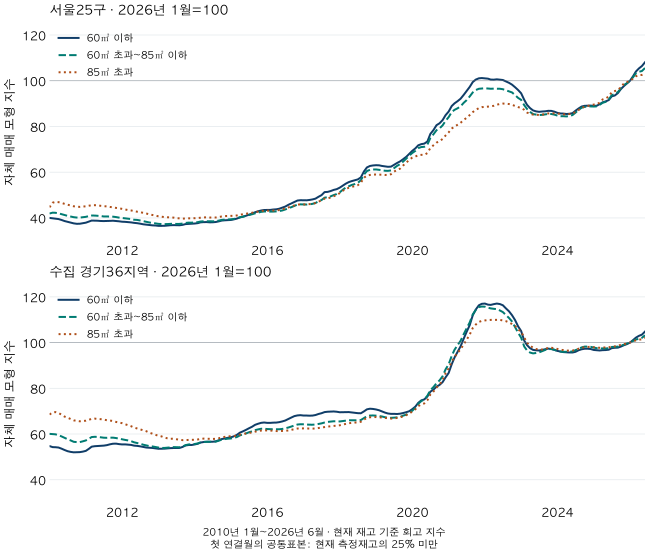

첫 집의 예산 · 면적별 가격 변화
소형 아파트가 더 올랐을까? 서울·경기 면적별 16년 지수 비교
소형 아파트가 대형보다 더 올랐을까요? 서울·수집 경기의 전용60㎡ 이하·60~85㎡·85㎡ 초과 자체지수로2010~2026년 변화, 하락기 반전과 끝월 민감도를 비교합니다.
분석 기간 · 2010년1월~2026년6월 · 자체 매매 모형 지수 | 자료 기준일 · 2026-10-04
2010년 1월부터 2026년 6월까지, 이 프로젝트의 서울·수집 경기 아파트 지수에서는 전용 60㎡ 이하가 85㎡ 초과보다 더 많이 올랐습니다. 서울은 각각 +170.23%와 +130.93%, 수집 경기는 +91.50%와 +48.98%였습니다. 하지만 하락 참고구간에서는 작은 면적군이 더 크게 내렸습니다. ‘작은 집이 언제나 유리하다’는 결론은 나오지 않습니다.
전용면적 60㎡와 85㎡를 경계로 나눴습니다
비교 대상은 전용 60㎡ 이하 / 60㎡ 초과~85㎡ 이하 / 85㎡ 초과입니다. 정확히 60㎡는 첫째, 정확히 85㎡는 둘째 군에 들어갑니다. 이 글에서 ‘소형’은 첫째 군을 가리키는 편의상 표현이며, 이 블로그의 59형·84형(용어집)과는 다른 면적 구간입니다. 마지막 군은 85㎡를 넘는 주택을 모두 합쳤으므로 다른 통계의 ‘대형’ 정의와 같다고 가정하지 않습니다. 공급면적이나 분양 평형으로 나누지도 않았습니다.
지역은 서울 25구와 수집 경기 36개 시·구입니다. 인천, 수집하지 않은 경기 지역, 세대수가 측정되지 않은 재고는 포함하지 않았습니다. 현재 확인된 각 단지·정확면적의 세대수를 가중치로 고정하고, 가격을 확인할 수 있는 같은 주택 묶음을 인접한 두 달 사이에서 비교했습니다. 실제 세대별 거래를 계속 추적했다는 뜻은 아닙니다.
가격은 보유 실거래 자료에 기반한 자체 매매 모형의 추정가격입니다. 직접 추정이 없으면 정해진 조건을 통과한 같은 단지의 다른 면적 가격을 보정해 사용합니다. 신뢰도가 약하거나 오래된 가격도 현행 지수 규칙대로 포함했습니다. 공식 KB 면적별 지수를 복제한 결과가 아니며, KB 광역 지수는 아래 참고구간의 날짜를 정할 때만 사용했습니다.
전체 기간에는 작은 면적군의 상승률이 더 높았습니다
서울의 2010년 1월→2026년 6월 변화율은 60㎡ 이하 +170.23%,60㎡ 초과~85㎡ 이하 +151.73%,85㎡ 초과 +130.93%입니다. 수집 경기는 같은 순서로 +91.50%,+71.74%,+48.98%입니다. 서울의 첫째와 셋째 군 차이는 39.30%포인트입니다. 작은 집의 가격이 큰 집보다 39.30% 비싸졌다는 뜻이 아닙니다.
아래 선은 모두 2026년 1월을 100으로 맞췄습니다. 따라서 과거 지수가 더 낮다고 과거의 원화 가격이 더 쌌다는 뜻은 아닙니다. 같은 끝점을 향해 얼마나 변했는지 보는 눈금입니다. 예를 들어 지수가 40에서 100이 되면 변화율은 150%이고,60에서 100이 되면 66.67%입니다. 원화 가격과 상승률을 구분하는 가상 산술 예시입니다.

하락 구간에서는 순서가 뒤집혔습니다
기간을 유리하게 고르지 않도록 전체기간과 초기기간, 상승·하락·반등의 세 참고구간을 계산 전에 정했습니다. 기존 2022년 하락기 글에서 확인한 KB 광역 정점·저점 날짜를 세 면적군에 똑같이 적용했습니다. 서울은 2022년 7월·2024년 5월, 경기는 2022년 5월·2024년 6월입니다. 이 날짜가 자체 모형이나 각 면적군의 실제 고점·저점이라는 뜻은 아닙니다.
상승 참고구간은 2020년 1월부터 위 정점월까지, 하락은 정점월부터 저점월까지, 반등은 저점월부터 2026년 6월까지입니다. 서울의 하락 참고구간에서 60㎡ 이하는 −14.73%,85㎡ 초과는 −5.07%였습니다. 수집 경기에서도 각각 −18.28%,−12.20%로 작은 면적군이 더 많이 내렸습니다. 장기 상승률이 높았다는 사실이 하락 방어력까지 보장하지는 않습니다.
| 구간 | 기간 | 60㎡ 이하 | 60㎡ 초과~85㎡ 이하 | 85㎡ 초과 |
|---|---|---|---|---|
| 전체 · 고정 구간 | 2010-01 → 2026-06 | +170.23% | +151.73% | +130.93% |
| 초기 · 고정 구간 | 2010-01 → 2020-01 | +73.36% | +63.12% | +48.73% |
| 상승 참고구간 · 고정 구간 | 2020-01 → 2022-07 | +44.69% | +40.78% | +35.56% |
| 하락 참고구간 · 고정 구간 | 2022-07 → 2024-05 | -14.73% | -12.19% | -5.07% |
| 반등 참고구간 · 고정 구간 | 2024-05 → 2026-06 | +26.33% | +24.84% | +20.66% |
| 구간 | 기간 | 60㎡ 이하 | 60㎡ 초과~85㎡ 이하 | 85㎡ 초과 |
|---|---|---|---|---|
| 전체 · 고정 구간 | 2010-01 → 2026-06 | +91.50% | +71.74% | +48.98% |
| 초기 · 고정 구간 | 2010-01 → 2020-01 | +29.51% | +16.86% | +1.87% |
| 상승 참고구간 · 고정 구간 | 2020-01 → 2022-05 | +65.14% | +63.29% | +57.40% |
| 하락 참고구간 · 고정 구간 | 2022-05 → 2024-06 | -18.28% | -16.14% | -12.20% |
| 반등 참고구간 · 고정 구간 | 2024-06 → 2026-06 | +9.56% | +7.32% | +5.83% |
하락률은 정점월, 반등률은 저점월이 분모입니다. 둘을 더해서 원래 가격을 회복했는지 판단하면 안 됩니다. 가령 20% 하락 뒤 20% 반등하면 시작값의 96%입니다. 반등과 고점 회복의 차이에서 이 분모를 더 살펴볼 수 있습니다.
끝월을 3개월만 바꿔도 반등 순서는 달라집니다
각 구간의 시작 또는 끝을 한 번에 하나씩 3개월 앞뒤로 옮겼습니다. 전체기간·초기·상승·하락 구간에서 계산할 수 있었던 변형은 모두 세 면적군의 순서가 유지됐습니다. 하지만 서울 반등을 2026년 3월에서 끝내면 60㎡ 이하 +21.57%보다 60㎡ 초과~85㎡ 이하 +22.04%가 높았습니다. 원래 끝월인 6월에서는 각각 +26.33%,+24.84%입니다.
이 반례는 소형의 장기 상승률 자체를 지우지는 않습니다. 다만 ‘최근 반등도 소형이 가장 강하다’는 문장이 끝월에 의존한다는 점을 보여 줍니다. 2010년 이전이나 2026년 6월 이후로 나가는 변형은 계산 범위 밖으로 남겼습니다. 날짜를 잘라 붙이거나 최근 분기를 추가하지 않았습니다.
시작·끝 ±3개월의 전체 결과 펼치기
| 변형 | 기간 | 60㎡ 이하 | 60㎡ 초과~85㎡ 이하 | 85㎡ 초과 |
|---|---|---|---|---|
| 전체 · 시작 −3개월 | 2009-10 → 2026-06 | 계산 범위 밖 | 계산 범위 밖 | 계산 범위 밖 |
| 전체 · 시작 +3개월 | 2010-04 → 2026-06 | +173.64% | +151.31% | +119.86% |
| 전체 · 끝 −3개월 | 2010-01 → 2026-03 | +160.05% | +146.09% | +128.37% |
| 전체 · 끝 +3개월 | 2010-01 → 2026-09 | 계산 범위 밖 | 계산 범위 밖 | 계산 범위 밖 |
| 초기 · 시작 −3개월 | 2009-10 → 2020-01 | 계산 범위 밖 | 계산 범위 밖 | 계산 범위 밖 |
| 초기 · 시작 +3개월 | 2010-04 → 2020-01 | +75.55% | +62.84% | +41.60% |
| 초기 · 끝 −3개월 | 2010-01 → 2019-10 | +64.27% | +54.18% | +40.98% |
| 초기 · 끝 +3개월 | 2010-01 → 2020-04 | +80.71% | +69.30% | +51.39% |
| 상승 참고구간 · 시작 −3개월 | 2019-10 → 2022-07 | +52.70% | +48.94% | +43.01% |
| 상승 참고구간 · 시작 +3개월 | 2020-04 → 2022-07 | +38.81% | +35.63% | +33.18% |
| 상승 참고구간 · 끝 −3개월 | 2020-01 → 2022-04 | +44.90% | +41.14% | +34.11% |
| 상승 참고구간 · 끝 +3개월 | 2020-01 → 2022-10 | +41.76% | +38.72% | +34.80% |
| 하락 참고구간 · 시작 −3개월 | 2022-04 → 2024-05 | -14.85% | -12.42% | -4.04% |
| 하락 참고구간 · 시작 +3개월 | 2022-10 → 2024-05 | -12.96% | -10.89% | -4.54% |
| 하락 참고구간 · 끝 −3개월 | 2022-07 → 2024-02 | -14.60% | -12.28% | -5.00% |
| 하락 참고구간 · 끝 +3개월 | 2022-07 → 2024-08 | -12.43% | -9.38% | -3.13% |
| 반등 참고구간 · 시작 −3개월 | 2024-02 → 2026-06 | +26.15% | +24.97% | +20.56% |
| 반등 참고구간 · 시작 +3개월 | 2024-08 → 2026-06 | +23.02% | +20.98% | +18.24% |
| 반등 참고구간 · 끝 −3개월 | 2024-05 → 2026-03 | +21.57% | +22.04% | +19.33% |
| 반등 참고구간 · 끝 +3개월 | 2024-05 → 2026-09 | 계산 범위 밖 | 계산 범위 밖 | 계산 범위 밖 |
| 변형 | 기간 | 60㎡ 이하 | 60㎡ 초과~85㎡ 이하 | 85㎡ 초과 |
|---|---|---|---|---|
| 전체 · 시작 −3개월 | 2009-10 → 2026-06 | 계산 범위 밖 | 계산 범위 밖 | 계산 범위 밖 |
| 전체 · 시작 +3개월 | 2010-04 → 2026-06 | +93.75% | +73.43% | +47.60% |
| 전체 · 끝 −3개월 | 2010-01 → 2026-03 | +86.63% | +68.70% | +47.31% |
| 전체 · 끝 +3개월 | 2010-01 → 2026-09 | 계산 범위 밖 | 계산 범위 밖 | 계산 범위 밖 |
| 초기 · 시작 −3개월 | 2009-10 → 2020-01 | 계산 범위 밖 | 계산 범위 밖 | 계산 범위 밖 |
| 초기 · 시작 +3개월 | 2010-04 → 2020-01 | +31.04% | +18.01% | +0.92% |
| 초기 · 끝 −3개월 | 2010-01 → 2019-10 | +26.41% | +13.28% | -1.18% |
| 초기 · 끝 +3개월 | 2010-01 → 2020-04 | +36.54% | +23.88% | +6.37% |
| 상승 참고구간 · 시작 −3개월 | 2019-10 → 2022-05 | +69.20% | +68.45% | +62.26% |
| 상승 참고구간 · 시작 +3개월 | 2020-04 → 2022-05 | +56.65% | +54.03% | +50.73% |
| 상승 참고구간 · 끝 −3개월 | 2020-01 → 2022-02 | +64.48% | +64.15% | +57.32% |
| 상승 참고구간 · 끝 +3개월 | 2020-01 → 2022-08 | +62.16% | +59.55% | +56.59% |
| 하락 참고구간 · 시작 −3개월 | 2022-02 → 2024-06 | -17.95% | -16.58% | -12.16% |
| 하락 참고구간 · 시작 +3개월 | 2022-08 → 2024-06 | -16.78% | -14.17% | -11.75% |
| 하락 참고구간 · 끝 −3개월 | 2022-05 → 2024-03 | -18.13% | -16.28% | -12.01% |
| 하락 참고구간 · 끝 +3개월 | 2022-05 → 2024-09 | -17.08% | -14.61% | -11.13% |
| 반등 참고구간 · 시작 −3개월 | 2024-03 → 2026-06 | +9.36% | +7.51% | +5.60% |
| 반등 참고구간 · 시작 +3개월 | 2024-09 → 2026-06 | +7.97% | +5.40% | +4.55% |
| 반등 참고구간 · 끝 −3개월 | 2024-06 → 2026-03 | +6.78% | +5.42% | +4.65% |
| 반등 참고구간 · 끝 +3개월 | 2024-06 → 2026-09 | 계산 범위 밖 | 계산 범위 밖 | 계산 범위 밖 |
가격이 없는 주택의 변화율을 0%라고 가정하면?
주 지수는 두 달에 공통으로 가격이 있는 주택 묶음으로 변화를 계산합니다. 별도로, 해당 시점에 존재하고 기준가격은 있지만 공통가격이 없는 주택의 변화를 0%로 놓는 기존 계산도 확인했습니다. 이전에 가격을 본 주택은 마지막 상대가격을, 이전 가격도 없으면 기준가격 대비 1을 중립 가중치로 씁니다. 다시 가격이 나타난 첫 달까지 공통표본에 넣지 않으므로 빈 기간의 상승분을 나중에 회수하는 방식도 아닙니다.
이 가정의 전체기간 변화율은 서울 +163.38%,+146.04%,+120.65%, 수집 경기 +87.56%,+66.77%,+48.16%입니다. 장기 순서는 같지만 변화폭은 달라집니다. 0%는 관측 사실이 아니라 민감도 가정이며, 가격을 계산할 수 있는 세대가 실제로 늘어난 것이 아닙니다. 엄격한 품질표본만으로 다시 계산한 결과도 아닙니다.
개별 결측변화 0% 가정의 다섯 구간 펼치기
| 구간 | 기간 | 60㎡ 이하 | 60㎡ 초과~85㎡ 이하 | 85㎡ 초과 |
|---|---|---|---|---|
| 전체 · 고정 구간 | 2010-01 → 2026-06 | +163.38% | +146.04% | +120.65% |
| 초기 · 고정 구간 | 2010-01 → 2020-01 | +70.47% | +60.40% | +42.80% |
| 상승 참고구간 · 고정 구간 | 2020-01 → 2022-07 | +43.12% | +39.86% | +34.99% |
| 하락 참고구간 · 고정 구간 | 2022-07 → 2024-05 | -14.30% | -11.96% | -4.98% |
| 반등 참고구간 · 고정 구간 | 2024-05 → 2026-06 | +25.96% | +24.58% | +20.46% |
| 구간 | 기간 | 60㎡ 이하 | 60㎡ 초과~85㎡ 이하 | 85㎡ 초과 |
|---|---|---|---|---|
| 전체 · 고정 구간 | 2010-01 → 2026-06 | +87.56% | +66.77% | +48.16% |
| 초기 · 고정 구간 | 2010-01 → 2020-01 | +28.70% | +15.81% | +2.01% |
| 상승 참고구간 · 고정 구간 | 2020-01 → 2022-05 | +61.35% | +58.75% | +55.97% |
| 하락 참고구간 · 고정 구간 | 2022-05 → 2024-06 | -17.52% | -15.42% | -11.99% |
| 반등 참고구간 · 고정 구간 | 2024-06 → 2026-06 | +9.50% | +7.25% | +5.81% |
같은 집을 비교해도 ‘면적만의 효과’는 아닙니다
가장 강한 반론은 작은 집과 큰 집이 서로 다른 입지·연식·단지에 분포한다는 점입니다. 매달 거래된 집의 중위값을 비교하는 것보다는 거래 구성의 영향을 줄이지만, 면적군 사이의 입지나 준공연도를 같게 통제한 실험은 아닙니다. 관측되지 않는 가격의 추정오차와 면적 보정도 남습니다. 따라서 상승률 차이를 작은 면적 자체의 인과효과라고 부를 수 없습니다.
현재 측정된 재고와 세대수를 과거에도 고정해서 사용하고,2026년 1월 기준가격을 가진 표본이 필요합니다. 알려진 준공 전 가격은 제외했지만 철거·신축을 모두 복원한 과거 재고는 아닙니다. 준공연도 미상도 포함됩니다. 2010년 당시 투자자가 알 수 있었던 정보만으로 만든 지수 역시 아닙니다. 현재 기준월이나 원천 자료가 바뀌면 과거 지수도 달라질 수 있습니다.
특히 2010년 2월의 낮은 공통표본 커버리지는 장기 비교의 중요한 제약입니다. 가격을 계산할 수 있는 주택 40세대·10단지라는 최소 조건을 넘었다고 그 달의 현재 재고 전체를 대표하는 것은 아닙니다. 이후 달의 커버리지 범위도 아래에서 확인할 수 있습니다. ‘가용’은 그 달과 기준월의 가격이 있는 주택, ‘공통’은 인접한 두 달에 모두 가격이 있는 주택을 뜻합니다. 두 비율의 분모는 해당 면적군의 현재 측정 재고입니다.
작은 세대 집계가 인접월·면적군의 차감으로 드러나는 것을 막기 위해 두 광역의 전체기간에 걸쳐 정확한 세대·단지 수, 품질 표시와 정확 커버리지 비율을 함께 미공개했습니다. 아래는 25%포인트 폭의 커버리지 범위만 제공합니다. 보조 건수를 공개하지 않았다고 지수를 계산하지 못했거나 0건이라는 뜻은 아닙니다. 오래된 가격·보정가격의 정확한 비중, 중립 가정을 적용한 세대와 그중 이전 가격도 없는 세대의 수는 이 공개 표로 알 수 없습니다.
서울25구 · 60㎡ 이하 월별 지수·커버리지 펼치기
| 월 | 가격 기준일 | 주 지수 | 결측변화0% 가정 | 공통 커버리지 | 가용 커버리지 |
|---|---|---|---|---|---|
| 2010-01 | 2010-01-07 | 39.99 | 41.03 | 전월 연결 없음 | 0% 초과~25% 미만 |
| 2010-02 | 2010-02-11 | 39.83 | 41.01 | 0% 초과~25% 미만 | 50% 이상~75% 미만 |
| 2010-03 | 2010-03-11 | 39.72 | 40.94 | 50% 이상~75% 미만 | 50% 이상~75% 미만 |
| 2010-04 | 2010-04-08 | 39.50 | 40.77 | 50% 이상~75% 미만 | 50% 이상~75% 미만 |
| 2010-05 | 2010-05-06 | 39.11 | 40.45 | 50% 이상~75% 미만 | 50% 이상~75% 미만 |
| 2010-06 | 2010-06-10 | 38.63 | 40.05 | 50% 이상~75% 미만 | 50% 이상~75% 미만 |
| 2010-07 | 2010-07-08 | 38.30 | 39.75 | 50% 이상~75% 미만 | 50% 이상~75% 미만 |
| 2010-08 | 2010-08-05 | 37.97 | 39.46 | 50% 이상~75% 미만 | 50% 이상~75% 미만 |
| 2010-09 | 2010-09-09 | 37.61 | 39.13 | 50% 이상~75% 미만 | 50% 이상~75% 미만 |
| 2010-10 | 2010-10-07 | 37.43 | 38.96 | 50% 이상~75% 미만 | 50% 이상~75% 미만 |
| 2010-11 | 2010-11-11 | 37.45 | 38.98 | 50% 이상~75% 미만 | 50% 이상~75% 미만 |
| 2010-12 | 2010-12-09 | 37.68 | 39.20 | 50% 이상~75% 미만 | 50% 이상~75% 미만 |
| 2011-01 | 2011-01-06 | 37.91 | 39.43 | 50% 이상~75% 미만 | 50% 이상~75% 미만 |
| 2011-02 | 2011-02-10 | 38.43 | 39.89 | 50% 이상~75% 미만 | 50% 이상~75% 미만 |
| 2011-03 | 2011-03-10 | 38.84 | 40.28 | 50% 이상~75% 미만 | 50% 이상~75% 미만 |
| 2011-04 | 2011-04-07 | 38.80 | 40.24 | 50% 이상~75% 미만 | 50% 이상~75% 미만 |
| 2011-05 | 2011-05-05 | 38.77 | 40.21 | 50% 이상~75% 미만 | 50% 이상~75% 미만 |
| 2011-06 | 2011-06-09 | 38.65 | 40.10 | 50% 이상~75% 미만 | 50% 이상~75% 미만 |
| 2011-07 | 2011-07-07 | 38.62 | 40.07 | 50% 이상~75% 미만 | 50% 이상~75% 미만 |
| 2011-08 | 2011-08-11 | 38.64 | 40.09 | 50% 이상~75% 미만 | 50% 이상~75% 미만 |
| 2011-09 | 2011-09-08 | 38.70 | 40.15 | 50% 이상~75% 미만 | 50% 이상~75% 미만 |
| 2011-10 | 2011-10-06 | 38.77 | 40.21 | 50% 이상~75% 미만 | 50% 이상~75% 미만 |
| 2011-11 | 2011-11-10 | 38.64 | 40.09 | 50% 이상~75% 미만 | 50% 이상~75% 미만 |
| 2011-12 | 2011-12-08 | 38.52 | 39.97 | 50% 이상~75% 미만 | 50% 이상~75% 미만 |
| 2012-01 | 2012-01-05 | 38.34 | 39.79 | 50% 이상~75% 미만 | 50% 이상~75% 미만 |
| 2012-02 | 2012-02-09 | 38.28 | 39.73 | 50% 이상~75% 미만 | 50% 이상~75% 미만 |
| 2012-03 | 2012-03-08 | 38.15 | 39.61 | 50% 이상~75% 미만 | 50% 이상~75% 미만 |
| 2012-04 | 2012-04-05 | 38.04 | 39.50 | 50% 이상~75% 미만 | 50% 이상~75% 미만 |
| 2012-05 | 2012-05-10 | 37.84 | 39.30 | 50% 이상~75% 미만 | 50% 이상~75% 미만 |
| 2012-06 | 2012-06-07 | 37.70 | 39.17 | 50% 이상~75% 미만 | 50% 이상~75% 미만 |
| 2012-07 | 2012-07-05 | 37.48 | 38.96 | 50% 이상~75% 미만 | 50% 이상~75% 미만 |
| 2012-08 | 2012-08-09 | 37.21 | 38.69 | 50% 이상~75% 미만 | 50% 이상~75% 미만 |
| 2012-09 | 2012-09-06 | 37.04 | 38.52 | 50% 이상~75% 미만 | 50% 이상~75% 미만 |
| 2012-10 | 2012-10-11 | 36.88 | 38.37 | 50% 이상~75% 미만 | 50% 이상~75% 미만 |
| 2012-11 | 2012-11-08 | 36.75 | 38.23 | 50% 이상~75% 미만 | 50% 이상~75% 미만 |
| 2012-12 | 2012-12-06 | 36.68 | 38.17 | 50% 이상~75% 미만 | 50% 이상~75% 미만 |
| 2013-01 | 2013-01-10 | 36.53 | 38.01 | 50% 이상~75% 미만 | 50% 이상~75% 미만 |
| 2013-02 | 2013-02-07 | 36.52 | 38.01 | 50% 이상~75% 미만 | 50% 이상~75% 미만 |
| 2013-03 | 2013-03-07 | 36.54 | 38.02 | 50% 이상~75% 미만 | 50% 이상~75% 미만 |
| 2013-04 | 2013-04-11 | 36.67 | 38.14 | 50% 이상~75% 미만 | 50% 이상~75% 미만 |
| 2013-05 | 2013-05-09 | 36.79 | 38.27 | 50% 이상~75% 미만 | 50% 이상~75% 미만 |
| 2013-06 | 2013-06-06 | 36.85 | 38.32 | 50% 이상~75% 미만 | 50% 이상~75% 미만 |
| 2013-07 | 2013-07-11 | 36.82 | 38.29 | 50% 이상~75% 미만 | 50% 이상~75% 미만 |
| 2013-08 | 2013-08-08 | 36.79 | 38.26 | 50% 이상~75% 미만 | 50% 이상~75% 미만 |
| 2013-09 | 2013-09-05 | 36.96 | 38.43 | 50% 이상~75% 미만 | 50% 이상~75% 미만 |
| 2013-10 | 2013-10-10 | 37.30 | 38.75 | 50% 이상~75% 미만 | 50% 이상~75% 미만 |
| 2013-11 | 2013-11-07 | 37.36 | 38.82 | 50% 이상~75% 미만 | 50% 이상~75% 미만 |
| 2013-12 | 2013-12-05 | 37.46 | 38.91 | 50% 이상~75% 미만 | 50% 이상~75% 미만 |
| 2014-01 | 2014-01-09 | 37.54 | 38.99 | 50% 이상~75% 미만 | 50% 이상~75% 미만 |
| 2014-02 | 2014-02-06 | 37.71 | 39.14 | 50% 이상~75% 미만 | 50% 이상~75% 미만 |
| 2014-03 | 2014-03-06 | 38.06 | 39.46 | 50% 이상~75% 미만 | 50% 이상~75% 미만 |
| 2014-04 | 2014-04-10 | 38.15 | 39.55 | 50% 이상~75% 미만 | 50% 이상~75% 미만 |
| 2014-05 | 2014-05-08 | 38.18 | 39.57 | 50% 이상~75% 미만 | 50% 이상~75% 미만 |
| 2014-06 | 2014-06-05 | 38.07 | 39.47 | 50% 이상~75% 미만 | 50% 이상~75% 미만 |
| 2014-07 | 2014-07-10 | 38.09 | 39.48 | 50% 이상~75% 미만 | 50% 이상~75% 미만 |
| 2014-08 | 2014-08-07 | 38.21 | 39.60 | 50% 이상~75% 미만 | 50% 이상~75% 미만 |
| 2014-09 | 2014-09-11 | 38.49 | 39.87 | 50% 이상~75% 미만 | 50% 이상~75% 미만 |
| 2014-10 | 2014-10-09 | 38.84 | 40.20 | 50% 이상~75% 미만 | 50% 이상~75% 미만 |
| 2014-11 | 2014-11-06 | 38.96 | 40.32 | 50% 이상~75% 미만 | 50% 이상~75% 미만 |
| 2014-12 | 2014-12-11 | 39.03 | 40.39 | 50% 이상~75% 미만 | 50% 이상~75% 미만 |
| 2015-01 | 2015-01-08 | 39.10 | 40.46 | 50% 이상~75% 미만 | 50% 이상~75% 미만 |
| 2015-02 | 2015-02-05 | 39.38 | 40.72 | 50% 이상~75% 미만 | 50% 이상~75% 미만 |
| 2015-03 | 2015-03-05 | 39.69 | 41.02 | 50% 이상~75% 미만 | 50% 이상~75% 미만 |
| 2015-04 | 2015-04-09 | 40.21 | 41.52 | 50% 이상~75% 미만 | 50% 이상~75% 미만 |
| 2015-05 | 2015-05-07 | 40.52 | 41.81 | 50% 이상~75% 미만 | 50% 이상~75% 미만 |
| 2015-06 | 2015-06-11 | 40.93 | 42.21 | 50% 이상~75% 미만 | 50% 이상~75% 미만 |
| 2015-07 | 2015-07-09 | 41.40 | 42.66 | 50% 이상~75% 미만 | 50% 이상~75% 미만 |
| 2015-08 | 2015-08-06 | 41.89 | 43.13 | 50% 이상~75% 미만 | 50% 이상~75% 미만 |
| 2015-09 | 2015-09-10 | 42.47 | 43.70 | 50% 이상~75% 미만 | 50% 이상~75% 미만 |
| 2015-10 | 2015-10-08 | 42.90 | 44.11 | 50% 이상~75% 미만 | 50% 이상~75% 미만 |
| 2015-11 | 2015-11-05 | 43.24 | 44.45 | 50% 이상~75% 미만 | 50% 이상~75% 미만 |
| 2015-12 | 2015-12-10 | 43.46 | 44.66 | 50% 이상~75% 미만 | 50% 이상~75% 미만 |
| 2016-01 | 2016-01-07 | 43.46 | 44.67 | 50% 이상~75% 미만 | 50% 이상~75% 미만 |
| 2016-02 | 2016-02-11 | 43.50 | 44.70 | 50% 이상~75% 미만 | 75% 이상~100% 이하 |
| 2016-03 | 2016-03-10 | 43.67 | 44.86 | 75% 이상~100% 이하 | 75% 이상~100% 이하 |
| 2016-04 | 2016-04-07 | 43.76 | 44.95 | 75% 이상~100% 이하 | 75% 이상~100% 이하 |
| 2016-05 | 2016-05-05 | 44.01 | 45.18 | 75% 이상~100% 이하 | 75% 이상~100% 이하 |
| 2016-06 | 2016-06-09 | 44.47 | 45.63 | 75% 이상~100% 이하 | 75% 이상~100% 이하 |
| 2016-07 | 2016-07-07 | 44.96 | 46.10 | 75% 이상~100% 이하 | 75% 이상~100% 이하 |
| 2016-08 | 2016-08-11 | 45.72 | 46.84 | 75% 이상~100% 이하 | 75% 이상~100% 이하 |
| 2016-09 | 2016-09-08 | 46.37 | 47.46 | 75% 이상~100% 이하 | 75% 이상~100% 이하 |
| 2016-10 | 2016-10-06 | 47.02 | 48.09 | 75% 이상~100% 이하 | 75% 이상~100% 이하 |
| 2016-11 | 2016-11-10 | 47.61 | 48.67 | 75% 이상~100% 이하 | 75% 이상~100% 이하 |
| 2016-12 | 2016-12-08 | 47.74 | 48.80 | 75% 이상~100% 이하 | 75% 이상~100% 이하 |
| 2017-01 | 2017-01-05 | 47.70 | 48.76 | 75% 이상~100% 이하 | 75% 이상~100% 이하 |
| 2017-02 | 2017-02-09 | 47.70 | 48.76 | 75% 이상~100% 이하 | 75% 이상~100% 이하 |
| 2017-03 | 2017-03-09 | 47.85 | 48.90 | 75% 이상~100% 이하 | 75% 이상~100% 이하 |
| 2017-04 | 2017-04-06 | 48.08 | 49.13 | 75% 이상~100% 이하 | 75% 이상~100% 이하 |
| 2017-05 | 2017-05-11 | 48.43 | 49.47 | 75% 이상~100% 이하 | 75% 이상~100% 이하 |
| 2017-06 | 2017-06-08 | 49.25 | 50.28 | 75% 이상~100% 이하 | 75% 이상~100% 이하 |
| 2017-07 | 2017-07-06 | 49.95 | 50.98 | 75% 이상~100% 이하 | 75% 이상~100% 이하 |
| 2017-08 | 2017-08-10 | 51.29 | 52.31 | 75% 이상~100% 이하 | 75% 이상~100% 이하 |
| 2017-09 | 2017-09-07 | 51.38 | 52.40 | 75% 이상~100% 이하 | 75% 이상~100% 이하 |
| 2017-10 | 2017-10-05 | 51.75 | 52.76 | 75% 이상~100% 이하 | 75% 이상~100% 이하 |
| 2017-11 | 2017-11-09 | 52.25 | 53.27 | 75% 이상~100% 이하 | 75% 이상~100% 이하 |
| 2017-12 | 2017-12-07 | 52.57 | 53.59 | 75% 이상~100% 이하 | 75% 이상~100% 이하 |
| 2018-01 | 2018-01-11 | 53.24 | 54.27 | 75% 이상~100% 이하 | 75% 이상~100% 이하 |
| 2018-02 | 2018-02-08 | 54.12 | 55.11 | 75% 이상~100% 이하 | 75% 이상~100% 이하 |
| 2018-03 | 2018-03-08 | 54.94 | 55.90 | 75% 이상~100% 이하 | 75% 이상~100% 이하 |
| 2018-04 | 2018-04-05 | 55.65 | 56.58 | 75% 이상~100% 이하 | 75% 이상~100% 이하 |
| 2018-05 | 2018-05-10 | 56.10 | 57.01 | 75% 이상~100% 이하 | 75% 이상~100% 이하 |
| 2018-06 | 2018-06-07 | 56.49 | 57.39 | 75% 이상~100% 이하 | 75% 이상~100% 이하 |
| 2018-07 | 2018-07-05 | 56.83 | 57.72 | 75% 이상~100% 이하 | 75% 이상~100% 이하 |
| 2018-08 | 2018-08-09 | 57.71 | 58.57 | 75% 이상~100% 이하 | 75% 이상~100% 이하 |
| 2018-09 | 2018-09-06 | 60.29 | 61.07 | 75% 이상~100% 이하 | 75% 이상~100% 이하 |
| 2018-10 | 2018-10-11 | 62.07 | 62.80 | 75% 이상~100% 이하 | 75% 이상~100% 이하 |
| 2018-11 | 2018-11-08 | 62.72 | 63.43 | 75% 이상~100% 이하 | 75% 이상~100% 이하 |
| 2018-12 | 2018-12-06 | 62.94 | 63.65 | 75% 이상~100% 이하 | 75% 이상~100% 이하 |
| 2019-01 | 2019-01-10 | 63.05 | 63.75 | 75% 이상~100% 이하 | 75% 이상~100% 이하 |
| 2019-02 | 2019-02-07 | 63.00 | 63.70 | 75% 이상~100% 이하 | 75% 이상~100% 이하 |
| 2019-03 | 2019-03-07 | 62.73 | 63.46 | 75% 이상~100% 이하 | 75% 이상~100% 이하 |
| 2019-04 | 2019-04-11 | 62.54 | 63.28 | 75% 이상~100% 이하 | 75% 이상~100% 이하 |
| 2019-05 | 2019-05-09 | 62.36 | 63.11 | 75% 이상~100% 이하 | 75% 이상~100% 이하 |
| 2019-06 | 2019-06-06 | 62.43 | 63.18 | 75% 이상~100% 이하 | 75% 이상~100% 이하 |
| 2019-07 | 2019-07-11 | 63.24 | 63.94 | 75% 이상~100% 이하 | 75% 이상~100% 이하 |
| 2019-08 | 2019-08-08 | 64.03 | 64.70 | 75% 이상~100% 이하 | 75% 이상~100% 이하 |
| 2019-09 | 2019-09-05 | 64.73 | 65.39 | 75% 이상~100% 이하 | 75% 이상~100% 이하 |
| 2019-10 | 2019-10-10 | 65.70 | 66.34 | 75% 이상~100% 이하 | 75% 이상~100% 이하 |
| 2019-11 | 2019-11-07 | 66.71 | 67.35 | 75% 이상~100% 이하 | 75% 이상~100% 이하 |
| 2019-12 | 2019-12-05 | 67.98 | 68.61 | 75% 이상~100% 이하 | 75% 이상~100% 이하 |
| 2020-01 | 2020-01-09 | 69.33 | 69.95 | 75% 이상~100% 이하 | 75% 이상~100% 이하 |
| 2020-02 | 2020-02-06 | 70.42 | 71.00 | 75% 이상~100% 이하 | 75% 이상~100% 이하 |
| 2020-03 | 2020-03-05 | 71.75 | 72.29 | 75% 이상~100% 이하 | 75% 이상~100% 이하 |
| 2020-04 | 2020-04-09 | 72.27 | 72.79 | 75% 이상~100% 이하 | 75% 이상~100% 이하 |
| 2020-05 | 2020-05-07 | 72.49 | 73.00 | 75% 이상~100% 이하 | 75% 이상~100% 이하 |
| 2020-06 | 2020-06-11 | 73.42 | 73.90 | 75% 이상~100% 이하 | 75% 이상~100% 이하 |
| 2020-07 | 2020-07-09 | 76.74 | 77.14 | 75% 이상~100% 이하 | 75% 이상~100% 이하 |
| 2020-08 | 2020-08-06 | 78.41 | 78.77 | 75% 이상~100% 이하 | 75% 이상~100% 이하 |
| 2020-09 | 2020-09-10 | 80.56 | 80.87 | 75% 이상~100% 이하 | 75% 이상~100% 이하 |
| 2020-10 | 2020-10-08 | 81.37 | 81.67 | 75% 이상~100% 이하 | 75% 이상~100% 이하 |
| 2020-11 | 2020-11-05 | 82.77 | 83.04 | 75% 이상~100% 이하 | 75% 이상~100% 이하 |
| 2020-12 | 2020-12-10 | 84.93 | 85.18 | 75% 이상~100% 이하 | 75% 이상~100% 이하 |
| 2021-01 | 2021-01-07 | 86.50 | 86.74 | 75% 이상~100% 이하 | 75% 이상~100% 이하 |
| 2021-02 | 2021-02-11 | 88.93 | 89.06 | 75% 이상~100% 이하 | 75% 이상~100% 이하 |
| 2021-03 | 2021-03-11 | 90.11 | 90.20 | 75% 이상~100% 이하 | 75% 이상~100% 이하 |
| 2021-04 | 2021-04-08 | 91.06 | 91.12 | 75% 이상~100% 이하 | 75% 이상~100% 이하 |
| 2021-05 | 2021-05-06 | 92.12 | 92.14 | 75% 이상~100% 이하 | 75% 이상~100% 이하 |
| 2021-06 | 2021-06-10 | 93.78 | 93.74 | 75% 이상~100% 이하 | 75% 이상~100% 이하 |
| 2021-07 | 2021-07-08 | 95.49 | 95.40 | 75% 이상~100% 이하 | 75% 이상~100% 이하 |
| 2021-08 | 2021-08-05 | 97.29 | 97.16 | 75% 이상~100% 이하 | 75% 이상~100% 이하 |
| 2021-09 | 2021-09-09 | 99.43 | 99.24 | 75% 이상~100% 이하 | 75% 이상~100% 이하 |
| 2021-10 | 2021-10-07 | 100.50 | 100.28 | 75% 이상~100% 이하 | 75% 이상~100% 이하 |
| 2021-11 | 2021-11-11 | 101.05 | 100.82 | 75% 이상~100% 이하 | 75% 이상~100% 이하 |
| 2021-12 | 2021-12-09 | 101.17 | 100.93 | 75% 이상~100% 이하 | 75% 이상~100% 이하 |
| 2022-01 | 2022-01-06 | 101.03 | 100.80 | 75% 이상~100% 이하 | 75% 이상~100% 이하 |
| 2022-02 | 2022-02-10 | 100.90 | 100.67 | 75% 이상~100% 이하 | 75% 이상~100% 이하 |
| 2022-03 | 2022-03-10 | 100.50 | 100.29 | 75% 이상~100% 이하 | 75% 이상~100% 이하 |
| 2022-04 | 2022-04-07 | 100.46 | 100.25 | 75% 이상~100% 이하 | 75% 이상~100% 이하 |
| 2022-05 | 2022-05-05 | 100.62 | 100.40 | 75% 이상~100% 이하 | 75% 이상~100% 이하 |
| 2022-06 | 2022-06-09 | 100.47 | 100.26 | 75% 이상~100% 이하 | 75% 이상~100% 이하 |
| 2022-07 | 2022-07-07 | 100.32 | 100.11 | 75% 이상~100% 이하 | 75% 이상~100% 이하 |
| 2022-08 | 2022-08-11 | 99.68 | 99.50 | 75% 이상~100% 이하 | 75% 이상~100% 이하 |
| 2022-09 | 2022-09-08 | 99.07 | 98.90 | 75% 이상~100% 이하 | 75% 이상~100% 이하 |
| 2022-10 | 2022-10-06 | 98.29 | 98.14 | 75% 이상~100% 이하 | 75% 이상~100% 이하 |
| 2022-11 | 2022-11-10 | 97.15 | 97.03 | 75% 이상~100% 이하 | 75% 이상~100% 이하 |
| 2022-12 | 2022-12-08 | 95.95 | 95.87 | 75% 이상~100% 이하 | 75% 이상~100% 이하 |
| 2023-01 | 2023-01-05 | 94.50 | 94.46 | 75% 이상~100% 이하 | 75% 이상~100% 이하 |
| 2023-02 | 2023-02-09 | 91.65 | 91.71 | 75% 이상~100% 이하 | 75% 이상~100% 이하 |
| 2023-03 | 2023-03-09 | 89.47 | 89.61 | 75% 이상~100% 이하 | 75% 이상~100% 이하 |
| 2023-04 | 2023-04-06 | 88.01 | 88.20 | 75% 이상~100% 이하 | 75% 이상~100% 이하 |
| 2023-05 | 2023-05-11 | 87.01 | 87.23 | 75% 이상~100% 이하 | 75% 이상~100% 이하 |
| 2023-06 | 2023-06-08 | 86.59 | 86.82 | 75% 이상~100% 이하 | 75% 이상~100% 이하 |
| 2023-07 | 2023-07-06 | 86.40 | 86.63 | 75% 이상~100% 이하 | 75% 이상~100% 이하 |
| 2023-08 | 2023-08-10 | 86.55 | 86.78 | 75% 이상~100% 이하 | 75% 이상~100% 이하 |
| 2023-09 | 2023-09-07 | 86.63 | 86.86 | 75% 이상~100% 이하 | 75% 이상~100% 이하 |
| 2023-10 | 2023-10-05 | 86.84 | 87.06 | 75% 이상~100% 이하 | 75% 이상~100% 이하 |
| 2023-11 | 2023-11-09 | 86.81 | 87.04 | 75% 이상~100% 이하 | 75% 이상~100% 이하 |
| 2023-12 | 2023-12-07 | 86.47 | 86.70 | 75% 이상~100% 이하 | 75% 이상~100% 이하 |
| 2024-01 | 2024-01-11 | 85.95 | 86.18 | 75% 이상~100% 이하 | 75% 이상~100% 이하 |
| 2024-02 | 2024-02-08 | 85.67 | 85.92 | 75% 이상~100% 이하 | 75% 이상~100% 이하 |
| 2024-03 | 2024-03-07 | 85.63 | 85.88 | 75% 이상~100% 이하 | 75% 이상~100% 이하 |
| 2024-04 | 2024-04-11 | 85.45 | 85.70 | 75% 이상~100% 이하 | 75% 이상~100% 이하 |
| 2024-05 | 2024-05-09 | 85.55 | 85.80 | 75% 이상~100% 이하 | 75% 이상~100% 이하 |
| 2024-06 | 2024-06-06 | 85.80 | 86.04 | 75% 이상~100% 이하 | 75% 이상~100% 이하 |
| 2024-07 | 2024-07-11 | 86.87 | 87.08 | 75% 이상~100% 이하 | 75% 이상~100% 이하 |
| 2024-08 | 2024-08-08 | 87.85 | 88.03 | 75% 이상~100% 이하 | 75% 이상~100% 이하 |
| 2024-09 | 2024-09-05 | 88.71 | 88.87 | 75% 이상~100% 이하 | 75% 이상~100% 이하 |
| 2024-10 | 2024-10-10 | 89.02 | 89.18 | 75% 이상~100% 이하 | 75% 이상~100% 이하 |
| 2024-11 | 2024-11-07 | 89.07 | 89.22 | 75% 이상~100% 이하 | 75% 이상~100% 이하 |
| 2024-12 | 2024-12-05 | 89.13 | 89.28 | 75% 이상~100% 이하 | 75% 이상~100% 이하 |
| 2025-01 | 2025-01-09 | 88.99 | 89.14 | 75% 이상~100% 이하 | 75% 이상~100% 이하 |
| 2025-02 | 2025-02-06 | 89.08 | 89.23 | 75% 이상~100% 이하 | 75% 이상~100% 이하 |
| 2025-03 | 2025-03-06 | 89.75 | 89.88 | 75% 이상~100% 이하 | 75% 이상~100% 이하 |
| 2025-04 | 2025-04-10 | 90.56 | 90.67 | 75% 이상~100% 이하 | 75% 이상~100% 이하 |
| 2025-05 | 2025-05-08 | 90.96 | 91.06 | 75% 이상~100% 이하 | 75% 이상~100% 이하 |
| 2025-06 | 2025-06-05 | 91.54 | 91.63 | 75% 이상~100% 이하 | 75% 이상~100% 이하 |
| 2025-07 | 2025-07-10 | 93.17 | 93.22 | 75% 이상~100% 이하 | 75% 이상~100% 이하 |
| 2025-08 | 2025-08-07 | 93.54 | 93.58 | 75% 이상~100% 이하 | 75% 이상~100% 이하 |
| 2025-09 | 2025-09-11 | 94.60 | 94.63 | 75% 이상~100% 이하 | 75% 이상~100% 이하 |
| 2025-10 | 2025-10-09 | 96.33 | 96.33 | 75% 이상~100% 이하 | 75% 이상~100% 이하 |
| 2025-11 | 2025-11-06 | 97.68 | 97.68 | 75% 이상~100% 이하 | 75% 이상~100% 이하 |
| 2025-12 | 2025-12-11 | 98.83 | 98.83 | 75% 이상~100% 이하 | 75% 이상~100% 이하 |
| 2026-01 | 2026-01-08 | 100.00 | 100.00 | 75% 이상~100% 이하 | 75% 이상~100% 이하 |
| 2026-02 | 2026-02-05 | 101.98 | 101.98 | 75% 이상~100% 이하 | 75% 이상~100% 이하 |
| 2026-03 | 2026-03-05 | 104.00 | 104.00 | 75% 이상~100% 이하 | 75% 이상~100% 이하 |
| 2026-04 | 2026-04-09 | 105.39 | 105.39 | 75% 이상~100% 이하 | 75% 이상~100% 이하 |
| 2026-05 | 2026-05-07 | 106.43 | 106.43 | 75% 이상~100% 이하 | 75% 이상~100% 이하 |
| 2026-06 | 2026-06-11 | 108.07 | 108.07 | 75% 이상~100% 이하 | 75% 이상~100% 이하 |
서울25구 · 60㎡ 초과~85㎡ 이하 월별 지수·커버리지 펼치기
| 월 | 가격 기준일 | 주 지수 | 결측변화0% 가정 | 공통 커버리지 | 가용 커버리지 |
|---|---|---|---|---|---|
| 2010-01 | 2010-01-07 | 41.93 | 42.90 | 전월 연결 없음 | 0% 초과~25% 미만 |
| 2010-02 | 2010-02-11 | 42.29 | 42.94 | 0% 초과~25% 미만 | 50% 이상~75% 미만 |
| 2010-03 | 2010-03-11 | 42.24 | 42.91 | 50% 이상~75% 미만 | 50% 이상~75% 미만 |
| 2010-04 | 2010-04-08 | 42.00 | 42.75 | 50% 이상~75% 미만 | 50% 이상~75% 미만 |
| 2010-05 | 2010-05-06 | 41.63 | 42.46 | 50% 이상~75% 미만 | 50% 이상~75% 미만 |
| 2010-06 | 2010-06-10 | 41.21 | 42.12 | 50% 이상~75% 미만 | 50% 이상~75% 미만 |
| 2010-07 | 2010-07-08 | 40.90 | 41.86 | 50% 이상~75% 미만 | 50% 이상~75% 미만 |
| 2010-08 | 2010-08-05 | 40.59 | 41.60 | 50% 이상~75% 미만 | 50% 이상~75% 미만 |
| 2010-09 | 2010-09-09 | 40.32 | 41.36 | 50% 이상~75% 미만 | 50% 이상~75% 미만 |
| 2010-10 | 2010-10-07 | 40.16 | 41.21 | 50% 이상~75% 미만 | 50% 이상~75% 미만 |
| 2010-11 | 2010-11-11 | 40.13 | 41.19 | 50% 이상~75% 미만 | 50% 이상~75% 미만 |
| 2010-12 | 2010-12-09 | 40.31 | 41.36 | 50% 이상~75% 미만 | 50% 이상~75% 미만 |
| 2011-01 | 2011-01-06 | 40.46 | 41.51 | 50% 이상~75% 미만 | 50% 이상~75% 미만 |
| 2011-02 | 2011-02-10 | 40.82 | 41.83 | 50% 이상~75% 미만 | 50% 이상~75% 미만 |
| 2011-03 | 2011-03-10 | 41.03 | 42.03 | 50% 이상~75% 미만 | 50% 이상~75% 미만 |
| 2011-04 | 2011-04-07 | 41.02 | 42.02 | 50% 이상~75% 미만 | 50% 이상~75% 미만 |
| 2011-05 | 2011-05-05 | 40.94 | 41.95 | 50% 이상~75% 미만 | 50% 이상~75% 미만 |
| 2011-06 | 2011-06-09 | 40.81 | 41.82 | 50% 이상~75% 미만 | 50% 이상~75% 미만 |
| 2011-07 | 2011-07-07 | 40.63 | 41.65 | 50% 이상~75% 미만 | 50% 이상~75% 미만 |
| 2011-08 | 2011-08-11 | 40.64 | 41.66 | 50% 이상~75% 미만 | 50% 이상~75% 미만 |
| 2011-09 | 2011-09-08 | 40.57 | 41.59 | 50% 이상~75% 미만 | 50% 이상~75% 미만 |
| 2011-10 | 2011-10-06 | 40.55 | 41.57 | 50% 이상~75% 미만 | 50% 이상~75% 미만 |
| 2011-11 | 2011-11-10 | 40.37 | 41.39 | 50% 이상~75% 미만 | 50% 이상~75% 미만 |
| 2011-12 | 2011-12-08 | 40.13 | 41.16 | 50% 이상~75% 미만 | 50% 이상~75% 미만 |
| 2012-01 | 2012-01-05 | 39.97 | 41.00 | 50% 이상~75% 미만 | 50% 이상~75% 미만 |
| 2012-02 | 2012-02-09 | 39.84 | 40.87 | 50% 이상~75% 미만 | 75% 이상~100% 이하 |
| 2012-03 | 2012-03-08 | 39.67 | 40.71 | 75% 이상~100% 이하 | 75% 이상~100% 이하 |
| 2012-04 | 2012-04-05 | 39.50 | 40.54 | 75% 이상~100% 이하 | 75% 이상~100% 이하 |
| 2012-05 | 2012-05-10 | 39.20 | 40.26 | 75% 이상~100% 이하 | 75% 이상~100% 이하 |
| 2012-06 | 2012-06-07 | 39.12 | 40.18 | 75% 이상~100% 이하 | 75% 이상~100% 이하 |
| 2012-07 | 2012-07-05 | 38.88 | 39.94 | 75% 이상~100% 이하 | 75% 이상~100% 이하 |
| 2012-08 | 2012-08-09 | 38.58 | 39.65 | 75% 이상~100% 이하 | 75% 이상~100% 이하 |
| 2012-09 | 2012-09-06 | 38.30 | 39.38 | 75% 이상~100% 이하 | 75% 이상~100% 이하 |
| 2012-10 | 2012-10-11 | 38.01 | 39.09 | 75% 이상~100% 이하 | 75% 이상~100% 이하 |
| 2012-11 | 2012-11-08 | 37.77 | 38.85 | 75% 이상~100% 이하 | 75% 이상~100% 이하 |
| 2012-12 | 2012-12-06 | 37.61 | 38.69 | 75% 이상~100% 이하 | 75% 이상~100% 이하 |
| 2013-01 | 2013-01-10 | 37.39 | 38.47 | 75% 이상~100% 이하 | 75% 이상~100% 이하 |
| 2013-02 | 2013-02-07 | 37.31 | 38.39 | 75% 이상~100% 이하 | 75% 이상~100% 이하 |
| 2013-03 | 2013-03-07 | 37.27 | 38.36 | 75% 이상~100% 이하 | 75% 이상~100% 이하 |
| 2013-04 | 2013-04-11 | 37.31 | 38.39 | 75% 이상~100% 이하 | 75% 이상~100% 이하 |
| 2013-05 | 2013-05-09 | 37.41 | 38.49 | 75% 이상~100% 이하 | 75% 이상~100% 이하 |
| 2013-06 | 2013-06-06 | 37.47 | 38.55 | 75% 이상~100% 이하 | 75% 이상~100% 이하 |
| 2013-07 | 2013-07-11 | 37.36 | 38.44 | 75% 이상~100% 이하 | 75% 이상~100% 이하 |
| 2013-08 | 2013-08-08 | 37.38 | 38.46 | 75% 이상~100% 이하 | 75% 이상~100% 이하 |
| 2013-09 | 2013-09-05 | 37.52 | 38.60 | 75% 이상~100% 이하 | 75% 이상~100% 이하 |
| 2013-10 | 2013-10-10 | 37.81 | 38.89 | 75% 이상~100% 이하 | 75% 이상~100% 이하 |
| 2013-11 | 2013-11-07 | 37.94 | 39.02 | 75% 이상~100% 이하 | 75% 이상~100% 이하 |
| 2013-12 | 2013-12-05 | 37.93 | 39.00 | 75% 이상~100% 이하 | 75% 이상~100% 이하 |
| 2014-01 | 2014-01-09 | 38.03 | 39.11 | 75% 이상~100% 이하 | 75% 이상~100% 이하 |
| 2014-02 | 2014-02-06 | 38.14 | 39.22 | 75% 이상~100% 이하 | 75% 이상~100% 이하 |
| 2014-03 | 2014-03-06 | 38.42 | 39.48 | 75% 이상~100% 이하 | 75% 이상~100% 이하 |
| 2014-04 | 2014-04-10 | 38.53 | 39.58 | 75% 이상~100% 이하 | 75% 이상~100% 이하 |
| 2014-05 | 2014-05-08 | 38.54 | 39.59 | 75% 이상~100% 이하 | 75% 이상~100% 이하 |
| 2014-06 | 2014-06-05 | 38.55 | 39.60 | 75% 이상~100% 이하 | 75% 이상~100% 이하 |
| 2014-07 | 2014-07-10 | 38.50 | 39.55 | 75% 이상~100% 이하 | 75% 이상~100% 이하 |
| 2014-08 | 2014-08-07 | 38.56 | 39.61 | 75% 이상~100% 이하 | 75% 이상~100% 이하 |
| 2014-09 | 2014-09-11 | 38.83 | 39.87 | 75% 이상~100% 이하 | 75% 이상~100% 이하 |
| 2014-10 | 2014-10-09 | 39.14 | 40.18 | 75% 이상~100% 이하 | 75% 이상~100% 이하 |
| 2014-11 | 2014-11-06 | 39.28 | 40.32 | 75% 이상~100% 이하 | 75% 이상~100% 이하 |
| 2014-12 | 2014-12-11 | 39.33 | 40.37 | 75% 이상~100% 이하 | 75% 이상~100% 이하 |
| 2015-01 | 2015-01-08 | 39.40 | 40.44 | 75% 이상~100% 이하 | 75% 이상~100% 이하 |
| 2015-02 | 2015-02-05 | 39.53 | 40.57 | 75% 이상~100% 이하 | 75% 이상~100% 이하 |
| 2015-03 | 2015-03-05 | 39.81 | 40.84 | 75% 이상~100% 이하 | 75% 이상~100% 이하 |
| 2015-04 | 2015-04-09 | 40.28 | 41.29 | 75% 이상~100% 이하 | 75% 이상~100% 이하 |
| 2015-05 | 2015-05-07 | 40.52 | 41.53 | 75% 이상~100% 이하 | 75% 이상~100% 이하 |
| 2015-06 | 2015-06-11 | 40.91 | 41.91 | 75% 이상~100% 이하 | 75% 이상~100% 이하 |
| 2015-07 | 2015-07-09 | 41.24 | 42.24 | 75% 이상~100% 이하 | 75% 이상~100% 이하 |
| 2015-08 | 2015-08-06 | 41.59 | 42.58 | 75% 이상~100% 이하 | 75% 이상~100% 이하 |
| 2015-09 | 2015-09-10 | 42.00 | 42.98 | 75% 이상~100% 이하 | 75% 이상~100% 이하 |
| 2015-10 | 2015-10-08 | 42.29 | 43.28 | 75% 이상~100% 이하 | 75% 이상~100% 이하 |
| 2015-11 | 2015-11-05 | 42.65 | 43.63 | 75% 이상~100% 이하 | 75% 이상~100% 이하 |
| 2015-12 | 2015-12-10 | 42.80 | 43.78 | 75% 이상~100% 이하 | 75% 이상~100% 이하 |
| 2016-01 | 2016-01-07 | 42.81 | 43.79 | 75% 이상~100% 이하 | 75% 이상~100% 이하 |
| 2016-02 | 2016-02-11 | 42.75 | 43.73 | 75% 이상~100% 이하 | 75% 이상~100% 이하 |
| 2016-03 | 2016-03-10 | 42.76 | 43.74 | 75% 이상~100% 이하 | 75% 이상~100% 이하 |
| 2016-04 | 2016-04-07 | 42.84 | 43.82 | 75% 이상~100% 이하 | 75% 이상~100% 이하 |
| 2016-05 | 2016-05-05 | 42.99 | 43.96 | 75% 이상~100% 이하 | 75% 이상~100% 이하 |
| 2016-06 | 2016-06-09 | 43.25 | 44.22 | 75% 이상~100% 이하 | 75% 이상~100% 이하 |
| 2016-07 | 2016-07-07 | 43.69 | 44.64 | 75% 이상~100% 이하 | 75% 이상~100% 이하 |
| 2016-08 | 2016-08-11 | 44.20 | 45.14 | 75% 이상~100% 이하 | 75% 이상~100% 이하 |
| 2016-09 | 2016-09-08 | 44.71 | 45.64 | 75% 이상~100% 이하 | 75% 이상~100% 이하 |
| 2016-10 | 2016-10-06 | 45.28 | 46.20 | 75% 이상~100% 이하 | 75% 이상~100% 이하 |
| 2016-11 | 2016-11-10 | 45.82 | 46.73 | 75% 이상~100% 이하 | 75% 이상~100% 이하 |
| 2016-12 | 2016-12-08 | 45.94 | 46.84 | 75% 이상~100% 이하 | 75% 이상~100% 이하 |
| 2017-01 | 2017-01-05 | 45.90 | 46.81 | 75% 이상~100% 이하 | 75% 이상~100% 이하 |
| 2017-02 | 2017-02-09 | 45.85 | 46.76 | 75% 이상~100% 이하 | 75% 이상~100% 이하 |
| 2017-03 | 2017-03-09 | 45.91 | 46.82 | 75% 이상~100% 이하 | 75% 이상~100% 이하 |
| 2017-04 | 2017-04-06 | 46.15 | 47.05 | 75% 이상~100% 이하 | 75% 이상~100% 이하 |
| 2017-05 | 2017-05-11 | 46.51 | 47.41 | 75% 이상~100% 이하 | 75% 이상~100% 이하 |
| 2017-06 | 2017-06-08 | 47.25 | 48.13 | 75% 이상~100% 이하 | 75% 이상~100% 이하 |
| 2017-07 | 2017-07-06 | 47.81 | 48.69 | 75% 이상~100% 이하 | 75% 이상~100% 이하 |
| 2017-08 | 2017-08-10 | 48.85 | 49.72 | 75% 이상~100% 이하 | 75% 이상~100% 이하 |
| 2017-09 | 2017-09-07 | 49.06 | 49.93 | 75% 이상~100% 이하 | 75% 이상~100% 이하 |
| 2017-10 | 2017-10-05 | 49.42 | 50.30 | 75% 이상~100% 이하 | 75% 이상~100% 이하 |
| 2017-11 | 2017-11-09 | 49.99 | 50.86 | 75% 이상~100% 이하 | 75% 이상~100% 이하 |
| 2017-12 | 2017-12-07 | 50.44 | 51.31 | 75% 이상~100% 이하 | 75% 이상~100% 이하 |
| 2018-01 | 2018-01-11 | 51.22 | 52.10 | 75% 이상~100% 이하 | 75% 이상~100% 이하 |
| 2018-02 | 2018-02-08 | 52.34 | 53.18 | 75% 이상~100% 이하 | 75% 이상~100% 이하 |
| 2018-03 | 2018-03-08 | 53.24 | 54.04 | 75% 이상~100% 이하 | 75% 이상~100% 이하 |
| 2018-04 | 2018-04-05 | 53.86 | 54.64 | 75% 이상~100% 이하 | 75% 이상~100% 이하 |
| 2018-05 | 2018-05-10 | 54.41 | 55.17 | 75% 이상~100% 이하 | 75% 이상~100% 이하 |
| 2018-06 | 2018-06-07 | 54.80 | 55.55 | 75% 이상~100% 이하 | 75% 이상~100% 이하 |
| 2018-07 | 2018-07-05 | 55.31 | 56.03 | 75% 이상~100% 이하 | 75% 이상~100% 이하 |
| 2018-08 | 2018-08-09 | 56.47 | 57.15 | 75% 이상~100% 이하 | 75% 이상~100% 이하 |
| 2018-09 | 2018-09-06 | 58.93 | 59.54 | 75% 이상~100% 이하 | 75% 이상~100% 이하 |
| 2018-10 | 2018-10-11 | 60.50 | 61.07 | 75% 이상~100% 이하 | 75% 이상~100% 이하 |
| 2018-11 | 2018-11-08 | 61.02 | 61.57 | 75% 이상~100% 이하 | 75% 이상~100% 이하 |
| 2018-12 | 2018-12-06 | 61.18 | 61.73 | 75% 이상~100% 이하 | 75% 이상~100% 이하 |
| 2019-01 | 2019-01-10 | 61.19 | 61.74 | 75% 이상~100% 이하 | 75% 이상~100% 이하 |
| 2019-02 | 2019-02-07 | 61.03 | 61.59 | 75% 이상~100% 이하 | 75% 이상~100% 이하 |
| 2019-03 | 2019-03-07 | 60.87 | 61.44 | 75% 이상~100% 이하 | 75% 이상~100% 이하 |
| 2019-04 | 2019-04-11 | 60.63 | 61.21 | 75% 이상~100% 이하 | 75% 이상~100% 이하 |
| 2019-05 | 2019-05-09 | 60.58 | 61.17 | 75% 이상~100% 이하 | 75% 이상~100% 이하 |
| 2019-06 | 2019-06-06 | 60.77 | 61.35 | 75% 이상~100% 이하 | 75% 이상~100% 이하 |
| 2019-07 | 2019-07-11 | 61.73 | 62.26 | 75% 이상~100% 이하 | 75% 이상~100% 이하 |
| 2019-08 | 2019-08-08 | 62.78 | 63.26 | 75% 이상~100% 이하 | 75% 이상~100% 이하 |
| 2019-09 | 2019-09-05 | 63.53 | 64.01 | 75% 이상~100% 이하 | 75% 이상~100% 이하 |
| 2019-10 | 2019-10-10 | 64.65 | 65.11 | 75% 이상~100% 이하 | 75% 이상~100% 이하 |
| 2019-11 | 2019-11-07 | 65.92 | 66.36 | 75% 이상~100% 이하 | 75% 이상~100% 이하 |
| 2019-12 | 2019-12-05 | 67.23 | 67.65 | 75% 이상~100% 이하 | 75% 이상~100% 이하 |
| 2020-01 | 2020-01-09 | 68.40 | 68.82 | 75% 이상~100% 이하 | 75% 이상~100% 이하 |
| 2020-02 | 2020-02-06 | 69.34 | 69.73 | 75% 이상~100% 이하 | 75% 이상~100% 이하 |
| 2020-03 | 2020-03-05 | 70.54 | 70.90 | 75% 이상~100% 이하 | 75% 이상~100% 이하 |
| 2020-04 | 2020-04-09 | 70.99 | 71.34 | 75% 이상~100% 이하 | 75% 이상~100% 이하 |
| 2020-05 | 2020-05-07 | 71.11 | 71.45 | 75% 이상~100% 이하 | 75% 이상~100% 이하 |
| 2020-06 | 2020-06-11 | 72.04 | 72.36 | 75% 이상~100% 이하 | 75% 이상~100% 이하 |
| 2020-07 | 2020-07-09 | 74.97 | 75.24 | 75% 이상~100% 이하 | 75% 이상~100% 이하 |
| 2020-08 | 2020-08-06 | 76.57 | 76.83 | 75% 이상~100% 이하 | 75% 이상~100% 이하 |
| 2020-09 | 2020-09-10 | 78.36 | 78.59 | 75% 이상~100% 이하 | 75% 이상~100% 이하 |
| 2020-10 | 2020-10-08 | 79.15 | 79.37 | 75% 이상~100% 이하 | 75% 이상~100% 이하 |
| 2020-11 | 2020-11-05 | 80.46 | 80.66 | 75% 이상~100% 이하 | 75% 이상~100% 이하 |
| 2020-12 | 2020-12-10 | 82.44 | 82.63 | 75% 이상~100% 이하 | 75% 이상~100% 이하 |
| 2021-01 | 2021-01-07 | 84.08 | 84.26 | 75% 이상~100% 이하 | 75% 이상~100% 이하 |
| 2021-02 | 2021-02-11 | 86.31 | 86.44 | 75% 이상~100% 이하 | 75% 이상~100% 이하 |
| 2021-03 | 2021-03-11 | 87.26 | 87.37 | 75% 이상~100% 이하 | 75% 이상~100% 이하 |
| 2021-04 | 2021-04-08 | 87.94 | 88.04 | 75% 이상~100% 이하 | 75% 이상~100% 이하 |
| 2021-05 | 2021-05-06 | 88.79 | 88.87 | 75% 이상~100% 이하 | 75% 이상~100% 이하 |
| 2021-06 | 2021-06-10 | 90.31 | 90.36 | 75% 이상~100% 이하 | 75% 이상~100% 이하 |
| 2021-07 | 2021-07-08 | 91.51 | 91.53 | 75% 이상~100% 이하 | 75% 이상~100% 이하 |
| 2021-08 | 2021-08-05 | 93.12 | 93.12 | 75% 이상~100% 이하 | 75% 이상~100% 이하 |
| 2021-09 | 2021-09-09 | 94.89 | 94.86 | 75% 이상~100% 이하 | 75% 이상~100% 이하 |
| 2021-10 | 2021-10-07 | 95.93 | 95.88 | 75% 이상~100% 이하 | 75% 이상~100% 이하 |
| 2021-11 | 2021-11-11 | 96.48 | 96.43 | 75% 이상~100% 이하 | 75% 이상~100% 이하 |
| 2021-12 | 2021-12-09 | 96.62 | 96.56 | 75% 이상~100% 이하 | 75% 이상~100% 이하 |
| 2022-01 | 2022-01-06 | 96.71 | 96.66 | 75% 이상~100% 이하 | 75% 이상~100% 이하 |
| 2022-02 | 2022-02-10 | 96.58 | 96.53 | 75% 이상~100% 이하 | 75% 이상~100% 이하 |
| 2022-03 | 2022-03-10 | 96.48 | 96.43 | 75% 이상~100% 이하 | 75% 이상~100% 이하 |
| 2022-04 | 2022-04-07 | 96.54 | 96.49 | 75% 이상~100% 이하 | 75% 이상~100% 이하 |
| 2022-05 | 2022-05-05 | 96.52 | 96.47 | 75% 이상~100% 이하 | 75% 이상~100% 이하 |
| 2022-06 | 2022-06-09 | 96.48 | 96.43 | 75% 이상~100% 이하 | 75% 이상~100% 이하 |
| 2022-07 | 2022-07-07 | 96.29 | 96.25 | 75% 이상~100% 이하 | 75% 이상~100% 이하 |
| 2022-08 | 2022-08-11 | 95.82 | 95.78 | 75% 이상~100% 이하 | 75% 이상~100% 이하 |
| 2022-09 | 2022-09-08 | 95.30 | 95.27 | 75% 이상~100% 이하 | 75% 이상~100% 이하 |
| 2022-10 | 2022-10-06 | 94.88 | 94.86 | 75% 이상~100% 이하 | 75% 이상~100% 이하 |
| 2022-11 | 2022-11-10 | 93.71 | 93.70 | 75% 이상~100% 이하 | 75% 이상~100% 이하 |
| 2022-12 | 2022-12-08 | 92.50 | 92.50 | 75% 이상~100% 이하 | 75% 이상~100% 이하 |
| 2023-01 | 2023-01-05 | 91.63 | 91.65 | 75% 이상~100% 이하 | 75% 이상~100% 이하 |
| 2023-02 | 2023-02-09 | 89.31 | 89.38 | 75% 이상~100% 이하 | 75% 이상~100% 이하 |
| 2023-03 | 2023-03-09 | 87.67 | 87.78 | 75% 이상~100% 이하 | 75% 이상~100% 이하 |
| 2023-04 | 2023-04-06 | 86.37 | 86.51 | 75% 이상~100% 이하 | 75% 이상~100% 이하 |
| 2023-05 | 2023-05-11 | 85.40 | 85.57 | 75% 이상~100% 이하 | 75% 이상~100% 이하 |
| 2023-06 | 2023-06-08 | 85.17 | 85.34 | 75% 이상~100% 이하 | 75% 이상~100% 이하 |
| 2023-07 | 2023-07-06 | 84.98 | 85.15 | 75% 이상~100% 이하 | 75% 이상~100% 이하 |
| 2023-08 | 2023-08-10 | 85.09 | 85.26 | 75% 이상~100% 이하 | 75% 이상~100% 이하 |
| 2023-09 | 2023-09-07 | 85.30 | 85.47 | 75% 이상~100% 이하 | 75% 이상~100% 이하 |
| 2023-10 | 2023-10-05 | 85.48 | 85.64 | 75% 이상~100% 이하 | 75% 이상~100% 이하 |
| 2023-11 | 2023-11-09 | 85.44 | 85.60 | 75% 이상~100% 이하 | 75% 이상~100% 이하 |
| 2023-12 | 2023-12-07 | 85.18 | 85.35 | 75% 이상~100% 이하 | 75% 이상~100% 이하 |
| 2024-01 | 2024-01-11 | 84.75 | 84.93 | 75% 이상~100% 이하 | 75% 이상~100% 이하 |
| 2024-02 | 2024-02-08 | 84.47 | 84.65 | 75% 이상~100% 이하 | 75% 이상~100% 이하 |
| 2024-03 | 2024-03-07 | 84.48 | 84.66 | 75% 이상~100% 이하 | 75% 이상~100% 이하 |
| 2024-04 | 2024-04-11 | 84.38 | 84.56 | 75% 이상~100% 이하 | 75% 이상~100% 이하 |
| 2024-05 | 2024-05-09 | 84.55 | 84.73 | 75% 이상~100% 이하 | 75% 이상~100% 이하 |
| 2024-06 | 2024-06-06 | 84.98 | 85.15 | 75% 이상~100% 이하 | 75% 이상~100% 이하 |
| 2024-07 | 2024-07-11 | 86.02 | 86.17 | 75% 이상~100% 이하 | 75% 이상~100% 이하 |
| 2024-08 | 2024-08-08 | 87.26 | 87.39 | 75% 이상~100% 이하 | 75% 이상~100% 이하 |
| 2024-09 | 2024-09-05 | 88.19 | 88.31 | 75% 이상~100% 이하 | 75% 이상~100% 이하 |
| 2024-10 | 2024-10-10 | 88.56 | 88.67 | 75% 이상~100% 이하 | 75% 이상~100% 이하 |
| 2024-11 | 2024-11-07 | 88.73 | 88.85 | 75% 이상~100% 이하 | 75% 이상~100% 이하 |
| 2024-12 | 2024-12-05 | 88.76 | 88.87 | 75% 이상~100% 이하 | 75% 이상~100% 이하 |
| 2025-01 | 2025-01-09 | 88.71 | 88.82 | 75% 이상~100% 이하 | 75% 이상~100% 이하 |
| 2025-02 | 2025-02-06 | 88.78 | 88.89 | 75% 이상~100% 이하 | 75% 이상~100% 이하 |
| 2025-03 | 2025-03-06 | 89.47 | 89.56 | 75% 이상~100% 이하 | 75% 이상~100% 이하 |
| 2025-04 | 2025-04-10 | 90.36 | 90.44 | 75% 이상~100% 이하 | 75% 이상~100% 이하 |
| 2025-05 | 2025-05-08 | 90.75 | 90.83 | 75% 이상~100% 이하 | 75% 이상~100% 이하 |
| 2025-06 | 2025-06-05 | 91.76 | 91.82 | 75% 이상~100% 이하 | 75% 이상~100% 이하 |
| 2025-07 | 2025-07-10 | 93.69 | 93.72 | 75% 이상~100% 이하 | 75% 이상~100% 이하 |
| 2025-08 | 2025-08-07 | 94.20 | 94.22 | 75% 이상~100% 이하 | 75% 이상~100% 이하 |
| 2025-09 | 2025-09-11 | 95.04 | 95.05 | 75% 이상~100% 이하 | 75% 이상~100% 이하 |
| 2025-10 | 2025-10-09 | 96.65 | 96.65 | 75% 이상~100% 이하 | 75% 이상~100% 이하 |
| 2025-11 | 2025-11-06 | 98.11 | 98.11 | 75% 이상~100% 이하 | 75% 이상~100% 이하 |
| 2025-12 | 2025-12-11 | 98.93 | 98.93 | 75% 이상~100% 이하 | 75% 이상~100% 이하 |
| 2026-01 | 2026-01-08 | 100.00 | 100.00 | 75% 이상~100% 이하 | 75% 이상~100% 이하 |
| 2026-02 | 2026-02-05 | 101.54 | 101.54 | 75% 이상~100% 이하 | 75% 이상~100% 이하 |
| 2026-03 | 2026-03-05 | 103.19 | 103.19 | 75% 이상~100% 이하 | 75% 이상~100% 이하 |
| 2026-04 | 2026-04-09 | 103.91 | 103.91 | 75% 이상~100% 이하 | 75% 이상~100% 이하 |
| 2026-05 | 2026-05-07 | 104.25 | 104.25 | 75% 이상~100% 이하 | 75% 이상~100% 이하 |
| 2026-06 | 2026-06-11 | 105.56 | 105.56 | 75% 이상~100% 이하 | 75% 이상~100% 이하 |
서울25구 · 85㎡ 초과 월별 지수·커버리지 펼치기
| 월 | 가격 기준일 | 주 지수 | 결측변화0% 가정 | 공통 커버리지 | 가용 커버리지 |
|---|---|---|---|---|---|
| 2010-01 | 2010-01-07 | 44.64 | 46.72 | 전월 연결 없음 | 0% 초과~25% 미만 |
| 2010-02 | 2010-02-11 | 46.66 | 46.98 | 0% 초과~25% 미만 | 50% 이상~75% 미만 |
| 2010-03 | 2010-03-11 | 47.01 | 47.19 | 50% 이상~75% 미만 | 50% 이상~75% 미만 |
| 2010-04 | 2010-04-08 | 46.89 | 47.11 | 50% 이상~75% 미만 | 50% 이상~75% 미만 |
| 2010-05 | 2010-05-06 | 46.58 | 46.87 | 50% 이상~75% 미만 | 50% 이상~75% 미만 |
| 2010-06 | 2010-06-10 | 46.14 | 46.53 | 50% 이상~75% 미만 | 50% 이상~75% 미만 |
| 2010-07 | 2010-07-08 | 45.77 | 46.22 | 50% 이상~75% 미만 | 50% 이상~75% 미만 |
| 2010-08 | 2010-08-05 | 45.42 | 45.93 | 50% 이상~75% 미만 | 50% 이상~75% 미만 |
| 2010-09 | 2010-09-09 | 45.08 | 45.64 | 50% 이상~75% 미만 | 75% 이상~100% 이하 |
| 2010-10 | 2010-10-07 | 44.96 | 45.53 | 75% 이상~100% 이하 | 75% 이상~100% 이하 |
| 2010-11 | 2010-11-11 | 44.81 | 45.40 | 75% 이상~100% 이하 | 75% 이상~100% 이하 |
| 2010-12 | 2010-12-09 | 44.95 | 45.52 | 75% 이상~100% 이하 | 75% 이상~100% 이하 |
| 2011-01 | 2011-01-06 | 45.08 | 45.65 | 75% 이상~100% 이하 | 75% 이상~100% 이하 |
| 2011-02 | 2011-02-10 | 45.34 | 45.88 | 75% 이상~100% 이하 | 75% 이상~100% 이하 |
| 2011-03 | 2011-03-10 | 45.52 | 46.04 | 75% 이상~100% 이하 | 75% 이상~100% 이하 |
| 2011-04 | 2011-04-07 | 45.56 | 46.08 | 75% 이상~100% 이하 | 75% 이상~100% 이하 |
| 2011-05 | 2011-05-05 | 45.50 | 46.02 | 75% 이상~100% 이하 | 75% 이상~100% 이하 |
| 2011-06 | 2011-06-09 | 45.29 | 45.83 | 75% 이상~100% 이하 | 75% 이상~100% 이하 |
| 2011-07 | 2011-07-07 | 45.16 | 45.71 | 75% 이상~100% 이하 | 75% 이상~100% 이하 |
| 2011-08 | 2011-08-11 | 45.01 | 45.57 | 75% 이상~100% 이하 | 75% 이상~100% 이하 |
| 2011-09 | 2011-09-08 | 44.79 | 45.36 | 75% 이상~100% 이하 | 75% 이상~100% 이하 |
| 2011-10 | 2011-10-06 | 44.65 | 45.23 | 75% 이상~100% 이하 | 75% 이상~100% 이하 |
| 2011-11 | 2011-11-10 | 44.38 | 44.97 | 75% 이상~100% 이하 | 75% 이상~100% 이하 |
| 2011-12 | 2011-12-08 | 44.23 | 44.82 | 75% 이상~100% 이하 | 75% 이상~100% 이하 |
| 2012-01 | 2012-01-05 | 43.94 | 44.55 | 75% 이상~100% 이하 | 75% 이상~100% 이하 |
| 2012-02 | 2012-02-09 | 43.68 | 44.30 | 75% 이상~100% 이하 | 75% 이상~100% 이하 |
| 2012-03 | 2012-03-08 | 43.45 | 44.08 | 75% 이상~100% 이하 | 75% 이상~100% 이하 |
| 2012-04 | 2012-04-05 | 43.26 | 43.89 | 75% 이상~100% 이하 | 75% 이상~100% 이하 |
| 2012-05 | 2012-05-10 | 42.96 | 43.61 | 75% 이상~100% 이하 | 75% 이상~100% 이하 |
| 2012-06 | 2012-06-07 | 42.71 | 43.36 | 75% 이상~100% 이하 | 75% 이상~100% 이하 |
| 2012-07 | 2012-07-05 | 42.54 | 43.20 | 75% 이상~100% 이하 | 75% 이상~100% 이하 |
| 2012-08 | 2012-08-09 | 42.20 | 42.87 | 75% 이상~100% 이하 | 75% 이상~100% 이하 |
| 2012-09 | 2012-09-06 | 41.92 | 42.60 | 75% 이상~100% 이하 | 75% 이상~100% 이하 |
| 2012-10 | 2012-10-11 | 41.57 | 42.25 | 75% 이상~100% 이하 | 75% 이상~100% 이하 |
| 2012-11 | 2012-11-08 | 41.28 | 41.97 | 75% 이상~100% 이하 | 75% 이상~100% 이하 |
| 2012-12 | 2012-12-06 | 41.04 | 41.73 | 75% 이상~100% 이하 | 75% 이상~100% 이하 |
| 2013-01 | 2013-01-10 | 40.70 | 41.39 | 75% 이상~100% 이하 | 75% 이상~100% 이하 |
| 2013-02 | 2013-02-07 | 40.53 | 41.23 | 75% 이상~100% 이하 | 75% 이상~100% 이하 |
| 2013-03 | 2013-03-07 | 40.37 | 41.07 | 75% 이상~100% 이하 | 75% 이상~100% 이하 |
| 2013-04 | 2013-04-11 | 40.27 | 40.97 | 75% 이상~100% 이하 | 75% 이상~100% 이하 |
| 2013-05 | 2013-05-09 | 40.21 | 40.91 | 75% 이상~100% 이하 | 75% 이상~100% 이하 |
| 2013-06 | 2013-06-06 | 40.14 | 40.84 | 75% 이상~100% 이하 | 75% 이상~100% 이하 |
| 2013-07 | 2013-07-11 | 39.90 | 40.61 | 75% 이상~100% 이하 | 75% 이상~100% 이하 |
| 2013-08 | 2013-08-08 | 39.81 | 40.52 | 75% 이상~100% 이하 | 75% 이상~100% 이하 |
| 2013-09 | 2013-09-05 | 39.69 | 40.41 | 75% 이상~100% 이하 | 75% 이상~100% 이하 |
| 2013-10 | 2013-10-10 | 39.75 | 40.47 | 75% 이상~100% 이하 | 75% 이상~100% 이하 |
| 2013-11 | 2013-11-07 | 39.83 | 40.54 | 75% 이상~100% 이하 | 75% 이상~100% 이하 |
| 2013-12 | 2013-12-05 | 39.86 | 40.57 | 75% 이상~100% 이하 | 75% 이상~100% 이하 |
| 2014-01 | 2014-01-09 | 39.87 | 40.58 | 75% 이상~100% 이하 | 75% 이상~100% 이하 |
| 2014-02 | 2014-02-06 | 39.95 | 40.66 | 75% 이상~100% 이하 | 75% 이상~100% 이하 |
| 2014-03 | 2014-03-06 | 40.09 | 40.78 | 75% 이상~100% 이하 | 75% 이상~100% 이하 |
| 2014-04 | 2014-04-10 | 40.22 | 40.91 | 75% 이상~100% 이하 | 75% 이상~100% 이하 |
| 2014-05 | 2014-05-08 | 40.24 | 40.93 | 75% 이상~100% 이하 | 75% 이상~100% 이하 |
| 2014-06 | 2014-06-05 | 40.16 | 40.85 | 75% 이상~100% 이하 | 75% 이상~100% 이하 |
| 2014-07 | 2014-07-10 | 40.17 | 40.86 | 75% 이상~100% 이하 | 75% 이상~100% 이하 |
| 2014-08 | 2014-08-07 | 40.18 | 40.87 | 75% 이상~100% 이하 | 75% 이상~100% 이하 |
| 2014-09 | 2014-09-11 | 40.37 | 41.05 | 75% 이상~100% 이하 | 75% 이상~100% 이하 |
| 2014-10 | 2014-10-09 | 40.65 | 41.33 | 75% 이상~100% 이하 | 75% 이상~100% 이하 |
| 2014-11 | 2014-11-06 | 40.81 | 41.49 | 75% 이상~100% 이하 | 75% 이상~100% 이하 |
| 2014-12 | 2014-12-11 | 40.87 | 41.55 | 75% 이상~100% 이하 | 75% 이상~100% 이하 |
| 2015-01 | 2015-01-08 | 40.89 | 41.57 | 75% 이상~100% 이하 | 75% 이상~100% 이하 |
| 2015-02 | 2015-02-05 | 40.94 | 41.62 | 75% 이상~100% 이하 | 75% 이상~100% 이하 |
| 2015-03 | 2015-03-05 | 41.07 | 41.74 | 75% 이상~100% 이하 | 75% 이상~100% 이하 |
| 2015-04 | 2015-04-09 | 41.39 | 42.06 | 75% 이상~100% 이하 | 75% 이상~100% 이하 |
| 2015-05 | 2015-05-07 | 41.59 | 42.24 | 75% 이상~100% 이하 | 75% 이상~100% 이하 |
| 2015-06 | 2015-06-11 | 41.84 | 42.49 | 75% 이상~100% 이하 | 75% 이상~100% 이하 |
| 2015-07 | 2015-07-09 | 41.99 | 42.64 | 75% 이상~100% 이하 | 75% 이상~100% 이하 |
| 2015-08 | 2015-08-06 | 42.26 | 42.90 | 75% 이상~100% 이하 | 75% 이상~100% 이하 |
| 2015-09 | 2015-09-10 | 42.50 | 43.14 | 75% 이상~100% 이하 | 75% 이상~100% 이하 |
| 2015-10 | 2015-10-08 | 42.76 | 43.39 | 75% 이상~100% 이하 | 75% 이상~100% 이하 |
| 2015-11 | 2015-11-05 | 43.02 | 43.64 | 75% 이상~100% 이하 | 75% 이상~100% 이하 |
| 2015-12 | 2015-12-10 | 43.15 | 43.78 | 75% 이상~100% 이하 | 75% 이상~100% 이하 |
| 2016-01 | 2016-01-07 | 43.18 | 43.81 | 75% 이상~100% 이하 | 75% 이상~100% 이하 |
| 2016-02 | 2016-02-11 | 43.16 | 43.79 | 75% 이상~100% 이하 | 75% 이상~100% 이하 |
| 2016-03 | 2016-03-10 | 43.20 | 43.82 | 75% 이상~100% 이하 | 75% 이상~100% 이하 |
| 2016-04 | 2016-04-07 | 43.27 | 43.89 | 75% 이상~100% 이하 | 75% 이상~100% 이하 |
| 2016-05 | 2016-05-05 | 43.43 | 44.05 | 75% 이상~100% 이하 | 75% 이상~100% 이하 |
| 2016-06 | 2016-06-09 | 43.72 | 44.33 | 75% 이상~100% 이하 | 75% 이상~100% 이하 |
| 2016-07 | 2016-07-07 | 44.12 | 44.72 | 75% 이상~100% 이하 | 75% 이상~100% 이하 |
| 2016-08 | 2016-08-11 | 44.54 | 45.13 | 75% 이상~100% 이하 | 75% 이상~100% 이하 |
| 2016-09 | 2016-09-08 | 45.01 | 45.59 | 75% 이상~100% 이하 | 75% 이상~100% 이하 |
| 2016-10 | 2016-10-06 | 45.45 | 46.02 | 75% 이상~100% 이하 | 75% 이상~100% 이하 |
| 2016-11 | 2016-11-10 | 45.84 | 46.41 | 75% 이상~100% 이하 | 75% 이상~100% 이하 |
| 2016-12 | 2016-12-08 | 45.91 | 46.48 | 75% 이상~100% 이하 | 75% 이상~100% 이하 |
| 2017-01 | 2017-01-05 | 45.91 | 46.48 | 75% 이상~100% 이하 | 75% 이상~100% 이하 |
| 2017-02 | 2017-02-09 | 45.88 | 46.45 | 75% 이상~100% 이하 | 75% 이상~100% 이하 |
| 2017-03 | 2017-03-09 | 46.02 | 46.59 | 75% 이상~100% 이하 | 75% 이상~100% 이하 |
| 2017-04 | 2017-04-06 | 46.20 | 46.77 | 75% 이상~100% 이하 | 75% 이상~100% 이하 |
| 2017-05 | 2017-05-11 | 46.51 | 47.07 | 75% 이상~100% 이하 | 75% 이상~100% 이하 |
| 2017-06 | 2017-06-08 | 47.16 | 47.71 | 75% 이상~100% 이하 | 75% 이상~100% 이하 |
| 2017-07 | 2017-07-06 | 47.59 | 48.13 | 75% 이상~100% 이하 | 75% 이상~100% 이하 |
| 2017-08 | 2017-08-10 | 48.46 | 49.00 | 75% 이상~100% 이하 | 75% 이상~100% 이하 |
| 2017-09 | 2017-09-07 | 48.56 | 49.10 | 75% 이상~100% 이하 | 75% 이상~100% 이하 |
| 2017-10 | 2017-10-05 | 48.90 | 49.44 | 75% 이상~100% 이하 | 75% 이상~100% 이하 |
| 2017-11 | 2017-11-09 | 49.49 | 50.03 | 75% 이상~100% 이하 | 75% 이상~100% 이하 |
| 2017-12 | 2017-12-07 | 49.97 | 50.51 | 75% 이상~100% 이하 | 75% 이상~100% 이하 |
| 2018-01 | 2018-01-11 | 50.88 | 51.41 | 75% 이상~100% 이하 | 75% 이상~100% 이하 |
| 2018-02 | 2018-02-08 | 51.91 | 52.42 | 75% 이상~100% 이하 | 75% 이상~100% 이하 |
| 2018-03 | 2018-03-08 | 52.56 | 53.05 | 75% 이상~100% 이하 | 75% 이상~100% 이하 |
| 2018-04 | 2018-04-05 | 53.19 | 53.68 | 75% 이상~100% 이하 | 75% 이상~100% 이하 |
| 2018-05 | 2018-05-10 | 53.56 | 54.04 | 75% 이상~100% 이하 | 75% 이상~100% 이하 |
| 2018-06 | 2018-06-07 | 53.97 | 54.44 | 75% 이상~100% 이하 | 75% 이상~100% 이하 |
| 2018-07 | 2018-07-05 | 54.30 | 54.76 | 75% 이상~100% 이하 | 75% 이상~100% 이하 |
| 2018-08 | 2018-08-09 | 55.36 | 55.80 | 75% 이상~100% 이하 | 75% 이상~100% 이하 |
| 2018-09 | 2018-09-06 | 57.59 | 57.99 | 75% 이상~100% 이하 | 75% 이상~100% 이하 |
| 2018-10 | 2018-10-11 | 58.48 | 58.87 | 75% 이상~100% 이하 | 75% 이상~100% 이하 |
| 2018-11 | 2018-11-08 | 58.79 | 59.18 | 75% 이상~100% 이하 | 75% 이상~100% 이하 |
| 2018-12 | 2018-12-06 | 59.00 | 59.38 | 75% 이상~100% 이하 | 75% 이상~100% 이하 |
| 2019-01 | 2019-01-10 | 58.95 | 59.33 | 75% 이상~100% 이하 | 75% 이상~100% 이하 |
| 2019-02 | 2019-02-07 | 58.92 | 59.31 | 75% 이상~100% 이하 | 75% 이상~100% 이하 |
| 2019-03 | 2019-03-07 | 58.91 | 59.30 | 75% 이상~100% 이하 | 75% 이상~100% 이하 |
| 2019-04 | 2019-04-11 | 58.78 | 59.17 | 75% 이상~100% 이하 | 75% 이상~100% 이하 |
| 2019-05 | 2019-05-09 | 58.81 | 59.20 | 75% 이상~100% 이하 | 75% 이상~100% 이하 |
| 2019-06 | 2019-06-06 | 59.11 | 59.49 | 75% 이상~100% 이하 | 75% 이상~100% 이하 |
| 2019-07 | 2019-07-11 | 60.24 | 60.60 | 75% 이상~100% 이하 | 75% 이상~100% 이하 |
| 2019-08 | 2019-08-08 | 60.98 | 61.33 | 75% 이상~100% 이하 | 75% 이상~100% 이하 |
| 2019-09 | 2019-09-05 | 61.57 | 61.92 | 75% 이상~100% 이하 | 75% 이상~100% 이하 |
| 2019-10 | 2019-10-10 | 62.93 | 63.27 | 75% 이상~100% 이하 | 75% 이상~100% 이하 |
| 2019-11 | 2019-11-07 | 64.14 | 64.47 | 75% 이상~100% 이하 | 75% 이상~100% 이하 |
| 2019-12 | 2019-12-05 | 65.39 | 65.71 | 75% 이상~100% 이하 | 75% 이상~100% 이하 |
| 2020-01 | 2020-01-09 | 66.39 | 66.72 | 75% 이상~100% 이하 | 75% 이상~100% 이하 |
| 2020-02 | 2020-02-06 | 66.85 | 67.17 | 75% 이상~100% 이하 | 75% 이상~100% 이하 |
| 2020-03 | 2020-03-05 | 67.42 | 67.73 | 75% 이상~100% 이하 | 75% 이상~100% 이하 |
| 2020-04 | 2020-04-09 | 67.58 | 67.89 | 75% 이상~100% 이하 | 75% 이상~100% 이하 |
| 2020-05 | 2020-05-07 | 67.56 | 67.87 | 75% 이상~100% 이하 | 75% 이상~100% 이하 |
| 2020-06 | 2020-06-11 | 68.35 | 68.65 | 75% 이상~100% 이하 | 75% 이상~100% 이하 |
| 2020-07 | 2020-07-09 | 70.59 | 70.86 | 75% 이상~100% 이하 | 75% 이상~100% 이하 |
| 2020-08 | 2020-08-06 | 71.75 | 72.00 | 75% 이상~100% 이하 | 75% 이상~100% 이하 |
| 2020-09 | 2020-09-10 | 72.94 | 73.18 | 75% 이상~100% 이하 | 75% 이상~100% 이하 |
| 2020-10 | 2020-10-08 | 73.55 | 73.78 | 75% 이상~100% 이하 | 75% 이상~100% 이하 |
| 2020-11 | 2020-11-05 | 74.52 | 74.75 | 75% 이상~100% 이하 | 75% 이상~100% 이하 |
| 2020-12 | 2020-12-10 | 76.03 | 76.25 | 75% 이상~100% 이하 | 75% 이상~100% 이하 |
| 2021-01 | 2021-01-07 | 77.41 | 77.63 | 75% 이상~100% 이하 | 75% 이상~100% 이하 |
| 2021-02 | 2021-02-11 | 79.09 | 79.29 | 75% 이상~100% 이하 | 75% 이상~100% 이하 |
| 2021-03 | 2021-03-11 | 79.95 | 80.13 | 75% 이상~100% 이하 | 75% 이상~100% 이하 |
| 2021-04 | 2021-04-08 | 80.74 | 80.91 | 75% 이상~100% 이하 | 75% 이상~100% 이하 |
| 2021-05 | 2021-05-06 | 81.60 | 81.75 | 75% 이상~100% 이하 | 75% 이상~100% 이하 |
| 2021-06 | 2021-06-10 | 82.82 | 82.96 | 75% 이상~100% 이하 | 75% 이상~100% 이하 |
| 2021-07 | 2021-07-08 | 83.80 | 83.93 | 75% 이상~100% 이하 | 75% 이상~100% 이하 |
| 2021-08 | 2021-08-05 | 84.98 | 85.10 | 75% 이상~100% 이하 | 75% 이상~100% 이하 |
| 2021-09 | 2021-09-09 | 86.28 | 86.38 | 75% 이상~100% 이하 | 75% 이상~100% 이하 |
| 2021-10 | 2021-10-07 | 87.22 | 87.32 | 75% 이상~100% 이하 | 75% 이상~100% 이하 |
| 2021-11 | 2021-11-11 | 88.02 | 88.11 | 75% 이상~100% 이하 | 75% 이상~100% 이하 |
| 2021-12 | 2021-12-09 | 88.43 | 88.52 | 75% 이상~100% 이하 | 75% 이상~100% 이하 |
| 2022-01 | 2022-01-06 | 88.59 | 88.68 | 75% 이상~100% 이하 | 75% 이상~100% 이하 |
| 2022-02 | 2022-02-10 | 88.68 | 88.76 | 75% 이상~100% 이하 | 75% 이상~100% 이하 |
| 2022-03 | 2022-03-10 | 88.82 | 88.90 | 75% 이상~100% 이하 | 75% 이상~100% 이하 |
| 2022-04 | 2022-04-07 | 89.04 | 89.12 | 75% 이상~100% 이하 | 75% 이상~100% 이하 |
| 2022-05 | 2022-05-05 | 89.51 | 89.58 | 75% 이상~100% 이하 | 75% 이상~100% 이하 |
| 2022-06 | 2022-06-09 | 89.84 | 89.90 | 75% 이상~100% 이하 | 75% 이상~100% 이하 |
| 2022-07 | 2022-07-07 | 90.00 | 90.06 | 75% 이상~100% 이하 | 75% 이상~100% 이하 |
| 2022-08 | 2022-08-11 | 89.95 | 90.02 | 75% 이상~100% 이하 | 75% 이상~100% 이하 |
| 2022-09 | 2022-09-08 | 89.80 | 89.87 | 75% 이상~100% 이하 | 75% 이상~100% 이하 |
| 2022-10 | 2022-10-06 | 89.50 | 89.57 | 75% 이상~100% 이하 | 75% 이상~100% 이하 |
| 2022-11 | 2022-11-10 | 88.95 | 89.02 | 75% 이상~100% 이하 | 75% 이상~100% 이하 |
| 2022-12 | 2022-12-08 | 88.48 | 88.56 | 75% 이상~100% 이하 | 75% 이상~100% 이하 |
| 2023-01 | 2023-01-05 | 88.07 | 88.16 | 75% 이상~100% 이하 | 75% 이상~100% 이하 |
| 2023-02 | 2023-02-09 | 87.29 | 87.39 | 75% 이상~100% 이하 | 75% 이상~100% 이하 |
| 2023-03 | 2023-03-09 | 86.09 | 86.22 | 75% 이상~100% 이하 | 75% 이상~100% 이하 |
| 2023-04 | 2023-04-06 | 85.48 | 85.62 | 75% 이상~100% 이하 | 75% 이상~100% 이하 |
| 2023-05 | 2023-05-11 | 85.20 | 85.34 | 75% 이상~100% 이하 | 75% 이상~100% 이하 |
| 2023-06 | 2023-06-08 | 85.21 | 85.36 | 75% 이상~100% 이하 | 75% 이상~100% 이하 |
| 2023-07 | 2023-07-06 | 84.92 | 85.06 | 75% 이상~100% 이하 | 75% 이상~100% 이하 |
| 2023-08 | 2023-08-10 | 85.16 | 85.31 | 75% 이상~100% 이하 | 75% 이상~100% 이하 |
| 2023-09 | 2023-09-07 | 85.41 | 85.55 | 75% 이상~100% 이하 | 75% 이상~100% 이하 |
| 2023-10 | 2023-10-05 | 85.69 | 85.83 | 75% 이상~100% 이하 | 75% 이상~100% 이하 |
| 2023-11 | 2023-11-09 | 85.78 | 85.92 | 75% 이상~100% 이하 | 75% 이상~100% 이하 |
| 2023-12 | 2023-12-07 | 85.74 | 85.88 | 75% 이상~100% 이하 | 75% 이상~100% 이하 |
| 2024-01 | 2024-01-11 | 85.65 | 85.79 | 75% 이상~100% 이하 | 75% 이상~100% 이하 |
| 2024-02 | 2024-02-08 | 85.50 | 85.65 | 75% 이상~100% 이하 | 75% 이상~100% 이하 |
| 2024-03 | 2024-03-07 | 85.31 | 85.45 | 75% 이상~100% 이하 | 75% 이상~100% 이하 |
| 2024-04 | 2024-04-11 | 85.29 | 85.44 | 75% 이상~100% 이하 | 75% 이상~100% 이하 |
| 2024-05 | 2024-05-09 | 85.44 | 85.58 | 75% 이상~100% 이하 | 75% 이상~100% 이하 |
| 2024-06 | 2024-06-06 | 85.58 | 85.73 | 75% 이상~100% 이하 | 75% 이상~100% 이하 |
| 2024-07 | 2024-07-11 | 86.36 | 86.49 | 75% 이상~100% 이하 | 75% 이상~100% 이하 |
| 2024-08 | 2024-08-08 | 87.19 | 87.31 | 75% 이상~100% 이하 | 75% 이상~100% 이하 |
| 2024-09 | 2024-09-05 | 88.10 | 88.21 | 75% 이상~100% 이하 | 75% 이상~100% 이하 |
| 2024-10 | 2024-10-10 | 88.65 | 88.75 | 75% 이상~100% 이하 | 75% 이상~100% 이하 |
| 2024-11 | 2024-11-07 | 88.96 | 89.07 | 75% 이상~100% 이하 | 75% 이상~100% 이하 |
| 2024-12 | 2024-12-05 | 89.27 | 89.37 | 75% 이상~100% 이하 | 75% 이상~100% 이하 |
| 2025-01 | 2025-01-09 | 89.58 | 89.67 | 75% 이상~100% 이하 | 75% 이상~100% 이하 |
| 2025-02 | 2025-02-06 | 89.74 | 89.83 | 75% 이상~100% 이하 | 75% 이상~100% 이하 |
| 2025-03 | 2025-03-06 | 90.40 | 90.48 | 75% 이상~100% 이하 | 75% 이상~100% 이하 |
| 2025-04 | 2025-04-10 | 91.83 | 91.89 | 75% 이상~100% 이하 | 75% 이상~100% 이하 |
| 2025-05 | 2025-05-08 | 92.26 | 92.32 | 75% 이상~100% 이하 | 75% 이상~100% 이하 |
| 2025-06 | 2025-06-05 | 93.06 | 93.11 | 75% 이상~100% 이하 | 75% 이상~100% 이하 |
| 2025-07 | 2025-07-10 | 95.01 | 95.04 | 75% 이상~100% 이하 | 75% 이상~100% 이하 |
| 2025-08 | 2025-08-07 | 95.49 | 95.51 | 75% 이상~100% 이하 | 75% 이상~100% 이하 |
| 2025-09 | 2025-09-11 | 95.85 | 95.86 | 75% 이상~100% 이하 | 75% 이상~100% 이하 |
| 2025-10 | 2025-10-09 | 97.22 | 97.22 | 75% 이상~100% 이하 | 75% 이상~100% 이하 |
| 2025-11 | 2025-11-06 | 98.81 | 98.81 | 75% 이상~100% 이하 | 75% 이상~100% 이하 |
| 2025-12 | 2025-12-11 | 99.43 | 99.43 | 75% 이상~100% 이하 | 75% 이상~100% 이하 |
| 2026-01 | 2026-01-08 | 100.00 | 100.00 | 75% 이상~100% 이하 | 75% 이상~100% 이하 |
| 2026-02 | 2026-02-05 | 100.91 | 100.91 | 75% 이상~100% 이하 | 75% 이상~100% 이하 |
| 2026-03 | 2026-03-05 | 101.95 | 101.95 | 75% 이상~100% 이하 | 75% 이상~100% 이하 |
| 2026-04 | 2026-04-09 | 102.43 | 102.43 | 75% 이상~100% 이하 | 75% 이상~100% 이하 |
| 2026-05 | 2026-05-07 | 102.54 | 102.54 | 75% 이상~100% 이하 | 75% 이상~100% 이하 |
| 2026-06 | 2026-06-11 | 103.09 | 103.09 | 75% 이상~100% 이하 | 75% 이상~100% 이하 |
수집 경기36지역 · 60㎡ 이하 월별 지수·커버리지 펼치기
| 월 | 가격 기준일 | 주 지수 | 결측변화0% 가정 | 공통 커버리지 | 가용 커버리지 |
|---|---|---|---|---|---|
| 2010-01 | 2010-01-07 | 54.73 | 55.88 | 전월 연결 없음 | 0% 초과~25% 미만 |
| 2010-02 | 2010-02-11 | 54.27 | 55.79 | 0% 초과~25% 미만 | 50% 이상~75% 미만 |
| 2010-03 | 2010-03-11 | 54.23 | 55.76 | 50% 이상~75% 미만 | 50% 이상~75% 미만 |
| 2010-04 | 2010-04-08 | 54.10 | 55.64 | 50% 이상~75% 미만 | 50% 이상~75% 미만 |
| 2010-05 | 2010-05-06 | 53.61 | 55.19 | 50% 이상~75% 미만 | 50% 이상~75% 미만 |
| 2010-06 | 2010-06-10 | 53.01 | 54.63 | 50% 이상~75% 미만 | 50% 이상~75% 미만 |
| 2010-07 | 2010-07-08 | 52.50 | 54.15 | 50% 이상~75% 미만 | 50% 이상~75% 미만 |
| 2010-08 | 2010-08-05 | 52.19 | 53.85 | 50% 이상~75% 미만 | 50% 이상~75% 미만 |
| 2010-09 | 2010-09-09 | 52.00 | 53.67 | 50% 이상~75% 미만 | 50% 이상~75% 미만 |
| 2010-10 | 2010-10-07 | 52.02 | 53.69 | 50% 이상~75% 미만 | 50% 이상~75% 미만 |
| 2010-11 | 2010-11-11 | 52.09 | 53.75 | 50% 이상~75% 미만 | 50% 이상~75% 미만 |
| 2010-12 | 2010-12-09 | 52.30 | 53.96 | 50% 이상~75% 미만 | 50% 이상~75% 미만 |
| 2011-01 | 2011-01-06 | 52.63 | 54.29 | 50% 이상~75% 미만 | 50% 이상~75% 미만 |
| 2011-02 | 2011-02-10 | 53.54 | 55.16 | 50% 이상~75% 미만 | 50% 이상~75% 미만 |
| 2011-03 | 2011-03-10 | 54.47 | 56.07 | 50% 이상~75% 미만 | 50% 이상~75% 미만 |
| 2011-04 | 2011-04-07 | 54.68 | 56.27 | 50% 이상~75% 미만 | 50% 이상~75% 미만 |
| 2011-05 | 2011-05-05 | 54.77 | 56.36 | 50% 이상~75% 미만 | 50% 이상~75% 미만 |
| 2011-06 | 2011-06-09 | 54.89 | 56.47 | 50% 이상~75% 미만 | 50% 이상~75% 미만 |
| 2011-07 | 2011-07-07 | 54.94 | 56.52 | 50% 이상~75% 미만 | 50% 이상~75% 미만 |
| 2011-08 | 2011-08-11 | 55.14 | 56.72 | 50% 이상~75% 미만 | 50% 이상~75% 미만 |
| 2011-09 | 2011-09-08 | 55.50 | 57.07 | 50% 이상~75% 미만 | 50% 이상~75% 미만 |
| 2011-10 | 2011-10-06 | 55.76 | 57.33 | 50% 이상~75% 미만 | 50% 이상~75% 미만 |
| 2011-11 | 2011-11-10 | 55.80 | 57.37 | 50% 이상~75% 미만 | 50% 이상~75% 미만 |
| 2011-12 | 2011-12-08 | 55.59 | 57.16 | 50% 이상~75% 미만 | 50% 이상~75% 미만 |
| 2012-01 | 2012-01-05 | 55.45 | 57.02 | 50% 이상~75% 미만 | 50% 이상~75% 미만 |
| 2012-02 | 2012-02-09 | 55.47 | 57.04 | 50% 이상~75% 미만 | 50% 이상~75% 미만 |
| 2012-03 | 2012-03-08 | 55.37 | 56.94 | 50% 이상~75% 미만 | 50% 이상~75% 미만 |
| 2012-04 | 2012-04-05 | 55.24 | 56.81 | 50% 이상~75% 미만 | 50% 이상~75% 미만 |
| 2012-05 | 2012-05-10 | 54.93 | 56.51 | 50% 이상~75% 미만 | 50% 이상~75% 미만 |
| 2012-06 | 2012-06-07 | 54.82 | 56.40 | 50% 이상~75% 미만 | 50% 이상~75% 미만 |
| 2012-07 | 2012-07-05 | 54.62 | 56.20 | 50% 이상~75% 미만 | 50% 이상~75% 미만 |
| 2012-08 | 2012-08-09 | 54.35 | 55.94 | 50% 이상~75% 미만 | 50% 이상~75% 미만 |
| 2012-09 | 2012-09-06 | 54.09 | 55.69 | 50% 이상~75% 미만 | 50% 이상~75% 미만 |
| 2012-10 | 2012-10-11 | 54.03 | 55.62 | 50% 이상~75% 미만 | 50% 이상~75% 미만 |
| 2012-11 | 2012-11-08 | 53.92 | 55.51 | 50% 이상~75% 미만 | 50% 이상~75% 미만 |
| 2012-12 | 2012-12-06 | 53.72 | 55.32 | 50% 이상~75% 미만 | 50% 이상~75% 미만 |
| 2013-01 | 2013-01-10 | 53.55 | 55.14 | 50% 이상~75% 미만 | 50% 이상~75% 미만 |
| 2013-02 | 2013-02-07 | 53.58 | 55.17 | 50% 이상~75% 미만 | 50% 이상~75% 미만 |
| 2013-03 | 2013-03-07 | 53.60 | 55.19 | 50% 이상~75% 미만 | 50% 이상~75% 미만 |
| 2013-04 | 2013-04-11 | 53.72 | 55.30 | 50% 이상~75% 미만 | 50% 이상~75% 미만 |
| 2013-05 | 2013-05-09 | 53.83 | 55.41 | 50% 이상~75% 미만 | 50% 이상~75% 미만 |
| 2013-06 | 2013-06-06 | 53.88 | 55.47 | 50% 이상~75% 미만 | 50% 이상~75% 미만 |
| 2013-07 | 2013-07-11 | 53.88 | 55.46 | 50% 이상~75% 미만 | 50% 이상~75% 미만 |
| 2013-08 | 2013-08-08 | 53.91 | 55.49 | 50% 이상~75% 미만 | 50% 이상~75% 미만 |
| 2013-09 | 2013-09-05 | 54.35 | 55.92 | 50% 이상~75% 미만 | 50% 이상~75% 미만 |
| 2013-10 | 2013-10-10 | 54.99 | 56.56 | 50% 이상~75% 미만 | 50% 이상~75% 미만 |
| 2013-11 | 2013-11-07 | 55.19 | 56.75 | 50% 이상~75% 미만 | 50% 이상~75% 미만 |
| 2013-12 | 2013-12-05 | 55.21 | 56.77 | 50% 이상~75% 미만 | 50% 이상~75% 미만 |
| 2014-01 | 2014-01-09 | 55.44 | 56.99 | 50% 이상~75% 미만 | 50% 이상~75% 미만 |
| 2014-02 | 2014-02-06 | 55.75 | 57.29 | 50% 이상~75% 미만 | 50% 이상~75% 미만 |
| 2014-03 | 2014-03-06 | 56.28 | 57.81 | 50% 이상~75% 미만 | 50% 이상~75% 미만 |
| 2014-04 | 2014-04-10 | 56.50 | 58.02 | 50% 이상~75% 미만 | 50% 이상~75% 미만 |
| 2014-05 | 2014-05-08 | 56.63 | 58.15 | 50% 이상~75% 미만 | 50% 이상~75% 미만 |
| 2014-06 | 2014-06-05 | 56.61 | 58.13 | 50% 이상~75% 미만 | 50% 이상~75% 미만 |
| 2014-07 | 2014-07-10 | 56.62 | 58.14 | 50% 이상~75% 미만 | 50% 이상~75% 미만 |
| 2014-08 | 2014-08-07 | 56.82 | 58.34 | 50% 이상~75% 미만 | 50% 이상~75% 미만 |
| 2014-09 | 2014-09-11 | 57.27 | 58.78 | 50% 이상~75% 미만 | 50% 이상~75% 미만 |
| 2014-10 | 2014-10-09 | 57.81 | 59.31 | 50% 이상~75% 미만 | 50% 이상~75% 미만 |
| 2014-11 | 2014-11-06 | 58.10 | 59.59 | 50% 이상~75% 미만 | 50% 이상~75% 미만 |
| 2014-12 | 2014-12-11 | 58.35 | 59.84 | 50% 이상~75% 미만 | 50% 이상~75% 미만 |
| 2015-01 | 2015-01-08 | 58.56 | 60.05 | 50% 이상~75% 미만 | 50% 이상~75% 미만 |
| 2015-02 | 2015-02-05 | 59.02 | 60.49 | 50% 이상~75% 미만 | 50% 이상~75% 미만 |
| 2015-03 | 2015-03-05 | 59.61 | 61.06 | 50% 이상~75% 미만 | 50% 이상~75% 미만 |
| 2015-04 | 2015-04-09 | 60.60 | 62.00 | 50% 이상~75% 미만 | 50% 이상~75% 미만 |
| 2015-05 | 2015-05-07 | 61.16 | 62.54 | 50% 이상~75% 미만 | 50% 이상~75% 미만 |
| 2015-06 | 2015-06-11 | 61.81 | 63.17 | 50% 이상~75% 미만 | 50% 이상~75% 미만 |
| 2015-07 | 2015-07-09 | 62.51 | 63.85 | 50% 이상~75% 미만 | 50% 이상~75% 미만 |
| 2015-08 | 2015-08-06 | 63.17 | 64.49 | 50% 이상~75% 미만 | 50% 이상~75% 미만 |
| 2015-09 | 2015-09-10 | 64.02 | 65.31 | 50% 이상~75% 미만 | 50% 이상~75% 미만 |
| 2015-10 | 2015-10-08 | 64.49 | 65.77 | 50% 이상~75% 미만 | 50% 이상~75% 미만 |
| 2015-11 | 2015-11-05 | 64.89 | 66.16 | 50% 이상~75% 미만 | 50% 이상~75% 미만 |
| 2015-12 | 2015-12-10 | 65.05 | 66.31 | 50% 이상~75% 미만 | 50% 이상~75% 미만 |
| 2016-01 | 2016-01-07 | 64.88 | 66.15 | 50% 이상~75% 미만 | 50% 이상~75% 미만 |
| 2016-02 | 2016-02-11 | 64.88 | 66.15 | 50% 이상~75% 미만 | 50% 이상~75% 미만 |
| 2016-03 | 2016-03-10 | 64.98 | 66.24 | 50% 이상~75% 미만 | 50% 이상~75% 미만 |
| 2016-04 | 2016-04-07 | 65.01 | 66.27 | 50% 이상~75% 미만 | 50% 이상~75% 미만 |
| 2016-05 | 2016-05-05 | 65.19 | 66.44 | 50% 이상~75% 미만 | 50% 이상~75% 미만 |
| 2016-06 | 2016-06-09 | 65.51 | 66.74 | 50% 이상~75% 미만 | 50% 이상~75% 미만 |
| 2016-07 | 2016-07-07 | 65.92 | 67.12 | 50% 이상~75% 미만 | 50% 이상~75% 미만 |
| 2016-08 | 2016-08-11 | 66.59 | 67.77 | 50% 이상~75% 미만 | 50% 이상~75% 미만 |
| 2016-09 | 2016-09-08 | 67.24 | 68.38 | 50% 이상~75% 미만 | 50% 이상~75% 미만 |
| 2016-10 | 2016-10-06 | 67.84 | 68.96 | 50% 이상~75% 미만 | 50% 이상~75% 미만 |
| 2016-11 | 2016-11-10 | 68.14 | 69.25 | 50% 이상~75% 미만 | 50% 이상~75% 미만 |
| 2016-12 | 2016-12-08 | 68.25 | 69.36 | 50% 이상~75% 미만 | 50% 이상~75% 미만 |
| 2017-01 | 2017-01-05 | 68.09 | 69.20 | 50% 이상~75% 미만 | 50% 이상~75% 미만 |
| 2017-02 | 2017-02-09 | 68.09 | 69.20 | 50% 이상~75% 미만 | 50% 이상~75% 미만 |
| 2017-03 | 2017-03-09 | 68.03 | 69.15 | 50% 이상~75% 미만 | 50% 이상~75% 미만 |
| 2017-04 | 2017-04-06 | 68.07 | 69.19 | 50% 이상~75% 미만 | 50% 이상~75% 미만 |
| 2017-05 | 2017-05-11 | 68.30 | 69.40 | 50% 이상~75% 미만 | 50% 이상~75% 미만 |
| 2017-06 | 2017-06-08 | 68.77 | 69.84 | 50% 이상~75% 미만 | 50% 이상~75% 미만 |
| 2017-07 | 2017-07-06 | 69.10 | 70.15 | 50% 이상~75% 미만 | 50% 이상~75% 미만 |
| 2017-08 | 2017-08-10 | 69.60 | 70.62 | 50% 이상~75% 미만 | 50% 이상~75% 미만 |
| 2017-09 | 2017-09-07 | 69.75 | 70.77 | 50% 이상~75% 미만 | 50% 이상~75% 미만 |
| 2017-10 | 2017-10-05 | 69.82 | 70.83 | 50% 이상~75% 미만 | 50% 이상~75% 미만 |
| 2017-11 | 2017-11-09 | 69.87 | 70.87 | 50% 이상~75% 미만 | 50% 이상~75% 미만 |
| 2017-12 | 2017-12-07 | 69.75 | 70.76 | 50% 이상~75% 미만 | 50% 이상~75% 미만 |
| 2018-01 | 2018-01-11 | 69.53 | 70.55 | 50% 이상~75% 미만 | 50% 이상~75% 미만 |
| 2018-02 | 2018-02-08 | 69.56 | 70.58 | 50% 이상~75% 미만 | 50% 이상~75% 미만 |
| 2018-03 | 2018-03-08 | 69.62 | 70.64 | 50% 이상~75% 미만 | 50% 이상~75% 미만 |
| 2018-04 | 2018-04-05 | 69.60 | 70.62 | 50% 이상~75% 미만 | 50% 이상~75% 미만 |
| 2018-05 | 2018-05-10 | 69.44 | 70.47 | 50% 이상~75% 미만 | 50% 이상~75% 미만 |
| 2018-06 | 2018-06-07 | 69.27 | 70.32 | 50% 이상~75% 미만 | 50% 이상~75% 미만 |
| 2018-07 | 2018-07-05 | 69.13 | 70.18 | 50% 이상~75% 미만 | 50% 이상~75% 미만 |
| 2018-08 | 2018-08-09 | 69.08 | 70.14 | 50% 이상~75% 미만 | 75% 이상~100% 이하 |
| 2018-09 | 2018-09-06 | 69.90 | 70.91 | 75% 이상~100% 이하 | 75% 이상~100% 이하 |
| 2018-10 | 2018-10-11 | 70.80 | 71.76 | 75% 이상~100% 이하 | 75% 이상~100% 이하 |
| 2018-11 | 2018-11-08 | 71.07 | 72.02 | 75% 이상~100% 이하 | 75% 이상~100% 이하 |
| 2018-12 | 2018-12-06 | 70.97 | 71.92 | 75% 이상~100% 이하 | 75% 이상~100% 이하 |
| 2019-01 | 2019-01-10 | 70.74 | 71.70 | 75% 이상~100% 이하 | 75% 이상~100% 이하 |
| 2019-02 | 2019-02-07 | 70.39 | 71.38 | 75% 이상~100% 이하 | 75% 이상~100% 이하 |
| 2019-03 | 2019-03-07 | 69.92 | 70.94 | 75% 이상~100% 이하 | 75% 이상~100% 이하 |
| 2019-04 | 2019-04-11 | 69.37 | 70.43 | 75% 이상~100% 이하 | 75% 이상~100% 이하 |
| 2019-05 | 2019-05-09 | 68.98 | 70.07 | 75% 이상~100% 이하 | 75% 이상~100% 이하 |
| 2019-06 | 2019-06-06 | 68.82 | 69.92 | 75% 이상~100% 이하 | 75% 이상~100% 이하 |
| 2019-07 | 2019-07-11 | 68.83 | 69.92 | 75% 이상~100% 이하 | 75% 이상~100% 이하 |
| 2019-08 | 2019-08-08 | 68.76 | 69.86 | 75% 이상~100% 이하 | 75% 이상~100% 이하 |
| 2019-09 | 2019-09-05 | 68.90 | 70.00 | 75% 이상~100% 이하 | 75% 이상~100% 이하 |
| 2019-10 | 2019-10-10 | 69.19 | 70.27 | 75% 이상~100% 이하 | 75% 이상~100% 이하 |
| 2019-11 | 2019-11-07 | 69.55 | 70.62 | 75% 이상~100% 이하 | 75% 이상~100% 이하 |
| 2019-12 | 2019-12-05 | 69.97 | 71.03 | 75% 이상~100% 이하 | 75% 이상~100% 이하 |
| 2020-01 | 2020-01-09 | 70.89 | 71.92 | 75% 이상~100% 이하 | 75% 이상~100% 이하 |
| 2020-02 | 2020-02-06 | 71.99 | 72.96 | 75% 이상~100% 이하 | 75% 이상~100% 이하 |
| 2020-03 | 2020-03-05 | 73.64 | 74.52 | 75% 이상~100% 이하 | 75% 이상~100% 이하 |
| 2020-04 | 2020-04-09 | 74.73 | 75.55 | 75% 이상~100% 이하 | 75% 이상~100% 이하 |
| 2020-05 | 2020-05-07 | 75.14 | 75.95 | 75% 이상~100% 이하 | 75% 이상~100% 이하 |
| 2020-06 | 2020-06-11 | 76.42 | 77.16 | 75% 이상~100% 이하 | 75% 이상~100% 이하 |
| 2020-07 | 2020-07-09 | 78.52 | 79.18 | 75% 이상~100% 이하 | 75% 이상~100% 이하 |
| 2020-08 | 2020-08-06 | 79.43 | 80.06 | 75% 이상~100% 이하 | 75% 이상~100% 이하 |
| 2020-09 | 2020-09-10 | 80.72 | 81.31 | 75% 이상~100% 이하 | 75% 이상~100% 이하 |
| 2020-10 | 2020-10-08 | 81.46 | 82.03 | 75% 이상~100% 이하 | 75% 이상~100% 이하 |
| 2020-11 | 2020-11-05 | 82.69 | 83.22 | 75% 이상~100% 이하 | 75% 이상~100% 이하 |
| 2020-12 | 2020-12-10 | 84.78 | 85.25 | 75% 이상~100% 이하 | 75% 이상~100% 이하 |
| 2021-01 | 2021-01-07 | 86.71 | 87.13 | 75% 이상~100% 이하 | 75% 이상~100% 이하 |
| 2021-02 | 2021-02-11 | 90.53 | 90.71 | 75% 이상~100% 이하 | 75% 이상~100% 이하 |
| 2021-03 | 2021-03-11 | 93.45 | 93.46 | 75% 이상~100% 이하 | 75% 이상~100% 이하 |
| 2021-04 | 2021-04-08 | 95.96 | 95.84 | 75% 이상~100% 이하 | 75% 이상~100% 이하 |
| 2021-05 | 2021-05-06 | 98.34 | 98.09 | 75% 이상~100% 이하 | 75% 이상~100% 이하 |
| 2021-06 | 2021-06-10 | 101.64 | 101.24 | 75% 이상~100% 이하 | 75% 이상~100% 이하 |
| 2021-07 | 2021-07-08 | 104.68 | 104.15 | 75% 이상~100% 이하 | 75% 이상~100% 이하 |
| 2021-08 | 2021-08-05 | 107.60 | 106.93 | 75% 이상~100% 이하 | 75% 이상~100% 이하 |
| 2021-09 | 2021-09-09 | 111.96 | 111.12 | 75% 이상~100% 이하 | 75% 이상~100% 이하 |
| 2021-10 | 2021-10-07 | 114.44 | 113.50 | 75% 이상~100% 이하 | 75% 이상~100% 이하 |
| 2021-11 | 2021-11-11 | 116.30 | 115.30 | 75% 이상~100% 이하 | 75% 이상~100% 이하 |
| 2021-12 | 2021-12-09 | 116.95 | 115.93 | 75% 이상~100% 이하 | 75% 이상~100% 이하 |
| 2022-01 | 2022-01-06 | 117.05 | 116.03 | 75% 이상~100% 이하 | 75% 이상~100% 이하 |
| 2022-02 | 2022-02-10 | 116.59 | 115.59 | 75% 이상~100% 이하 | 75% 이상~100% 이하 |
| 2022-03 | 2022-03-10 | 116.48 | 115.49 | 75% 이상~100% 이하 | 75% 이상~100% 이하 |
| 2022-04 | 2022-04-07 | 116.81 | 115.81 | 75% 이상~100% 이하 | 75% 이상~100% 이하 |
| 2022-05 | 2022-05-05 | 117.06 | 116.04 | 75% 이상~100% 이하 | 75% 이상~100% 이하 |
| 2022-06 | 2022-06-09 | 116.85 | 115.84 | 75% 이상~100% 이하 | 75% 이상~100% 이하 |
| 2022-07 | 2022-07-07 | 116.32 | 115.33 | 75% 이상~100% 이하 | 75% 이상~100% 이하 |
| 2022-08 | 2022-08-11 | 114.94 | 114.02 | 75% 이상~100% 이하 | 75% 이상~100% 이하 |
| 2022-09 | 2022-09-08 | 113.66 | 112.79 | 75% 이상~100% 이하 | 75% 이상~100% 이하 |
| 2022-10 | 2022-10-06 | 111.98 | 111.19 | 75% 이상~100% 이하 | 75% 이상~100% 이하 |
| 2022-11 | 2022-11-10 | 109.83 | 109.13 | 75% 이상~100% 이하 | 75% 이상~100% 이하 |
| 2022-12 | 2022-12-08 | 107.12 | 106.54 | 75% 이상~100% 이하 | 75% 이상~100% 이하 |
| 2023-01 | 2023-01-05 | 105.06 | 104.55 | 75% 이상~100% 이하 | 75% 이상~100% 이하 |
| 2023-02 | 2023-02-09 | 100.86 | 100.63 | 75% 이상~100% 이하 | 75% 이상~100% 이하 |
| 2023-03 | 2023-03-09 | 98.88 | 98.77 | 75% 이상~100% 이하 | 75% 이상~100% 이하 |
| 2023-04 | 2023-04-06 | 97.53 | 97.50 | 75% 이상~100% 이하 | 75% 이상~100% 이하 |
| 2023-05 | 2023-05-11 | 96.81 | 96.81 | 75% 이상~100% 이하 | 75% 이상~100% 이하 |
| 2023-06 | 2023-06-08 | 96.61 | 96.63 | 75% 이상~100% 이하 | 75% 이상~100% 이하 |
| 2023-07 | 2023-07-06 | 96.54 | 96.55 | 75% 이상~100% 이하 | 75% 이상~100% 이하 |
| 2023-08 | 2023-08-10 | 96.83 | 96.83 | 75% 이상~100% 이하 | 75% 이상~100% 이하 |
| 2023-09 | 2023-09-07 | 97.16 | 97.16 | 75% 이상~100% 이하 | 75% 이상~100% 이하 |
| 2023-10 | 2023-10-05 | 97.36 | 97.34 | 75% 이상~100% 이하 | 75% 이상~100% 이하 |
| 2023-11 | 2023-11-09 | 97.18 | 97.18 | 75% 이상~100% 이하 | 75% 이상~100% 이하 |
| 2023-12 | 2023-12-07 | 96.82 | 96.82 | 75% 이상~100% 이하 | 75% 이상~100% 이하 |
| 2024-01 | 2024-01-11 | 96.36 | 96.37 | 75% 이상~100% 이하 | 75% 이상~100% 이하 |
| 2024-02 | 2024-02-08 | 96.07 | 96.11 | 75% 이상~100% 이하 | 75% 이상~100% 이하 |
| 2024-03 | 2024-03-07 | 95.84 | 95.88 | 75% 이상~100% 이하 | 75% 이상~100% 이하 |
| 2024-04 | 2024-04-11 | 95.75 | 95.80 | 75% 이상~100% 이하 | 75% 이상~100% 이하 |
| 2024-05 | 2024-05-09 | 95.66 | 95.71 | 75% 이상~100% 이하 | 75% 이상~100% 이하 |
| 2024-06 | 2024-06-06 | 95.66 | 95.71 | 75% 이상~100% 이하 | 75% 이상~100% 이하 |
| 2024-07 | 2024-07-11 | 95.96 | 96.00 | 75% 이상~100% 이하 | 75% 이상~100% 이하 |
| 2024-08 | 2024-08-08 | 96.64 | 96.67 | 75% 이상~100% 이하 | 75% 이상~100% 이하 |
| 2024-09 | 2024-09-05 | 97.07 | 97.09 | 75% 이상~100% 이하 | 75% 이상~100% 이하 |
| 2024-10 | 2024-10-10 | 97.29 | 97.30 | 75% 이상~100% 이하 | 75% 이상~100% 이하 |
| 2024-11 | 2024-11-07 | 97.31 | 97.32 | 75% 이상~100% 이하 | 75% 이상~100% 이하 |
| 2024-12 | 2024-12-05 | 97.18 | 97.19 | 75% 이상~100% 이하 | 75% 이상~100% 이하 |
| 2025-01 | 2025-01-09 | 96.77 | 96.79 | 75% 이상~100% 이하 | 75% 이상~100% 이하 |
| 2025-02 | 2025-02-06 | 96.67 | 96.69 | 75% 이상~100% 이하 | 75% 이상~100% 이하 |
| 2025-03 | 2025-03-06 | 96.55 | 96.57 | 75% 이상~100% 이하 | 75% 이상~100% 이하 |
| 2025-04 | 2025-04-10 | 96.69 | 96.71 | 75% 이상~100% 이하 | 75% 이상~100% 이하 |
| 2025-05 | 2025-05-08 | 96.73 | 96.75 | 75% 이상~100% 이하 | 75% 이상~100% 이하 |
| 2025-06 | 2025-06-05 | 96.88 | 96.90 | 75% 이상~100% 이하 | 75% 이상~100% 이하 |
| 2025-07 | 2025-07-10 | 97.56 | 97.57 | 75% 이상~100% 이하 | 75% 이상~100% 이하 |
| 2025-08 | 2025-08-07 | 97.72 | 97.73 | 75% 이상~100% 이하 | 75% 이상~100% 이하 |
| 2025-09 | 2025-09-11 | 97.78 | 97.79 | 75% 이상~100% 이하 | 75% 이상~100% 이하 |
| 2025-10 | 2025-10-09 | 98.25 | 98.25 | 75% 이상~100% 이하 | 75% 이상~100% 이하 |
| 2025-11 | 2025-11-06 | 98.85 | 98.85 | 75% 이상~100% 이하 | 75% 이상~100% 이하 |
| 2025-12 | 2025-12-11 | 99.32 | 99.32 | 75% 이상~100% 이하 | 75% 이상~100% 이하 |
| 2026-01 | 2026-01-08 | 100.00 | 100.00 | 75% 이상~100% 이하 | 75% 이상~100% 이하 |
| 2026-02 | 2026-02-05 | 101.09 | 101.09 | 75% 이상~100% 이하 | 75% 이상~100% 이하 |
| 2026-03 | 2026-03-05 | 102.15 | 102.15 | 75% 이상~100% 이하 | 75% 이상~100% 이하 |
| 2026-04 | 2026-04-09 | 102.94 | 102.94 | 75% 이상~100% 이하 | 75% 이상~100% 이하 |
| 2026-05 | 2026-05-07 | 103.47 | 103.47 | 75% 이상~100% 이하 | 75% 이상~100% 이하 |
| 2026-06 | 2026-06-11 | 104.81 | 104.81 | 75% 이상~100% 이하 | 75% 이상~100% 이하 |
수집 경기36지역 · 60㎡ 초과~85㎡ 이하 월별 지수·커버리지 펼치기
| 월 | 가격 기준일 | 주 지수 | 결측변화0% 가정 | 공통 커버리지 | 가용 커버리지 |
|---|---|---|---|---|---|
| 2010-01 | 2010-01-07 | 60.07 | 61.86 | 전월 연결 없음 | 0% 초과~25% 미만 |
| 2010-02 | 2010-02-11 | 59.99 | 61.85 | 0% 초과~25% 미만 | 25% 이상~50% 미만 |
| 2010-03 | 2010-03-11 | 59.87 | 61.77 | 25% 이상~50% 미만 | 25% 이상~50% 미만 |
| 2010-04 | 2010-04-08 | 59.49 | 61.46 | 25% 이상~50% 미만 | 25% 이상~50% 미만 |
| 2010-05 | 2010-05-06 | 58.97 | 61.02 | 25% 이상~50% 미만 | 25% 이상~50% 미만 |
| 2010-06 | 2010-06-10 | 58.33 | 60.45 | 25% 이상~50% 미만 | 25% 이상~50% 미만 |
| 2010-07 | 2010-07-08 | 57.74 | 59.92 | 25% 이상~50% 미만 | 25% 이상~50% 미만 |
| 2010-08 | 2010-08-05 | 57.21 | 59.43 | 25% 이상~50% 미만 | 50% 이상~75% 미만 |
| 2010-09 | 2010-09-09 | 56.60 | 58.86 | 50% 이상~75% 미만 | 50% 이상~75% 미만 |
| 2010-10 | 2010-10-07 | 56.48 | 58.75 | 50% 이상~75% 미만 | 50% 이상~75% 미만 |
| 2010-11 | 2010-11-11 | 56.47 | 58.74 | 50% 이상~75% 미만 | 50% 이상~75% 미만 |
| 2010-12 | 2010-12-09 | 56.80 | 59.05 | 50% 이상~75% 미만 | 50% 이상~75% 미만 |
| 2011-01 | 2011-01-06 | 57.20 | 59.44 | 50% 이상~75% 미만 | 50% 이상~75% 미만 |
| 2011-02 | 2011-02-10 | 57.94 | 60.14 | 50% 이상~75% 미만 | 50% 이상~75% 미만 |
| 2011-03 | 2011-03-10 | 58.68 | 60.85 | 50% 이상~75% 미만 | 50% 이상~75% 미만 |
| 2011-04 | 2011-04-07 | 58.79 | 60.96 | 50% 이상~75% 미만 | 50% 이상~75% 미만 |
| 2011-05 | 2011-05-05 | 58.74 | 60.90 | 50% 이상~75% 미만 | 50% 이상~75% 미만 |
| 2011-06 | 2011-06-09 | 58.56 | 60.73 | 50% 이상~75% 미만 | 50% 이상~75% 미만 |
| 2011-07 | 2011-07-07 | 58.39 | 60.57 | 50% 이상~75% 미만 | 50% 이상~75% 미만 |
| 2011-08 | 2011-08-11 | 58.34 | 60.52 | 50% 이상~75% 미만 | 50% 이상~75% 미만 |
| 2011-09 | 2011-09-08 | 58.42 | 60.60 | 50% 이상~75% 미만 | 50% 이상~75% 미만 |
| 2011-10 | 2011-10-06 | 58.42 | 60.60 | 50% 이상~75% 미만 | 50% 이상~75% 미만 |
| 2011-11 | 2011-11-10 | 58.25 | 60.43 | 50% 이상~75% 미만 | 50% 이상~75% 미만 |
| 2011-12 | 2011-12-08 | 57.97 | 60.15 | 50% 이상~75% 미만 | 50% 이상~75% 미만 |
| 2012-01 | 2012-01-05 | 57.67 | 59.85 | 50% 이상~75% 미만 | 50% 이상~75% 미만 |
| 2012-02 | 2012-02-09 | 57.43 | 59.63 | 50% 이상~75% 미만 | 50% 이상~75% 미만 |
| 2012-03 | 2012-03-08 | 57.20 | 59.42 | 50% 이상~75% 미만 | 50% 이상~75% 미만 |
| 2012-04 | 2012-04-05 | 56.88 | 59.11 | 50% 이상~75% 미만 | 50% 이상~75% 미만 |
| 2012-05 | 2012-05-10 | 56.38 | 58.63 | 50% 이상~75% 미만 | 50% 이상~75% 미만 |
| 2012-06 | 2012-06-07 | 56.07 | 58.34 | 50% 이상~75% 미만 | 50% 이상~75% 미만 |
| 2012-07 | 2012-07-05 | 55.76 | 58.04 | 50% 이상~75% 미만 | 50% 이상~75% 미만 |
| 2012-08 | 2012-08-09 | 55.33 | 57.63 | 50% 이상~75% 미만 | 50% 이상~75% 미만 |
| 2012-09 | 2012-09-06 | 55.02 | 57.34 | 50% 이상~75% 미만 | 50% 이상~75% 미만 |
| 2012-10 | 2012-10-11 | 54.73 | 57.05 | 50% 이상~75% 미만 | 50% 이상~75% 미만 |
| 2012-11 | 2012-11-08 | 54.57 | 56.90 | 50% 이상~75% 미만 | 50% 이상~75% 미만 |
| 2012-12 | 2012-12-06 | 54.34 | 56.67 | 50% 이상~75% 미만 | 50% 이상~75% 미만 |
| 2013-01 | 2013-01-10 | 54.09 | 56.43 | 50% 이상~75% 미만 | 50% 이상~75% 미만 |
| 2013-02 | 2013-02-07 | 53.94 | 56.28 | 50% 이상~75% 미만 | 50% 이상~75% 미만 |
| 2013-03 | 2013-03-07 | 53.91 | 56.26 | 50% 이상~75% 미만 | 50% 이상~75% 미만 |
| 2013-04 | 2013-04-11 | 54.04 | 56.37 | 50% 이상~75% 미만 | 50% 이상~75% 미만 |
| 2013-05 | 2013-05-09 | 54.19 | 56.52 | 50% 이상~75% 미만 | 50% 이상~75% 미만 |
| 2013-06 | 2013-06-06 | 54.29 | 56.62 | 50% 이상~75% 미만 | 50% 이상~75% 미만 |
| 2013-07 | 2013-07-11 | 54.23 | 56.56 | 50% 이상~75% 미만 | 50% 이상~75% 미만 |
| 2013-08 | 2013-08-08 | 54.20 | 56.54 | 50% 이상~75% 미만 | 50% 이상~75% 미만 |
| 2013-09 | 2013-09-05 | 54.52 | 56.85 | 50% 이상~75% 미만 | 50% 이상~75% 미만 |
| 2013-10 | 2013-10-10 | 55.14 | 57.46 | 50% 이상~75% 미만 | 50% 이상~75% 미만 |
| 2013-11 | 2013-11-07 | 55.44 | 57.76 | 50% 이상~75% 미만 | 50% 이상~75% 미만 |
| 2013-12 | 2013-12-05 | 55.54 | 57.85 | 50% 이상~75% 미만 | 50% 이상~75% 미만 |
| 2014-01 | 2014-01-09 | 55.65 | 57.96 | 50% 이상~75% 미만 | 50% 이상~75% 미만 |
| 2014-02 | 2014-02-06 | 55.89 | 58.19 | 50% 이상~75% 미만 | 50% 이상~75% 미만 |
| 2014-03 | 2014-03-06 | 56.35 | 58.63 | 50% 이상~75% 미만 | 50% 이상~75% 미만 |
| 2014-04 | 2014-04-10 | 56.56 | 58.83 | 50% 이상~75% 미만 | 50% 이상~75% 미만 |
| 2014-05 | 2014-05-08 | 56.59 | 58.86 | 50% 이상~75% 미만 | 50% 이상~75% 미만 |
| 2014-06 | 2014-06-05 | 56.59 | 58.86 | 50% 이상~75% 미만 | 50% 이상~75% 미만 |
| 2014-07 | 2014-07-10 | 56.63 | 58.90 | 50% 이상~75% 미만 | 50% 이상~75% 미만 |
| 2014-08 | 2014-08-07 | 56.66 | 58.93 | 50% 이상~75% 미만 | 50% 이상~75% 미만 |
| 2014-09 | 2014-09-11 | 57.10 | 59.36 | 50% 이상~75% 미만 | 50% 이상~75% 미만 |
| 2014-10 | 2014-10-09 | 57.54 | 59.78 | 50% 이상~75% 미만 | 50% 이상~75% 미만 |
| 2014-11 | 2014-11-06 | 57.79 | 60.03 | 50% 이상~75% 미만 | 50% 이상~75% 미만 |
| 2014-12 | 2014-12-11 | 57.96 | 60.20 | 50% 이상~75% 미만 | 50% 이상~75% 미만 |
| 2015-01 | 2015-01-08 | 58.05 | 60.29 | 50% 이상~75% 미만 | 50% 이상~75% 미만 |
| 2015-02 | 2015-02-05 | 58.35 | 60.57 | 50% 이상~75% 미만 | 50% 이상~75% 미만 |
| 2015-03 | 2015-03-05 | 58.67 | 60.86 | 50% 이상~75% 미만 | 50% 이상~75% 미만 |
| 2015-04 | 2015-04-09 | 59.40 | 61.55 | 50% 이상~75% 미만 | 50% 이상~75% 미만 |
| 2015-05 | 2015-05-07 | 59.83 | 61.95 | 50% 이상~75% 미만 | 50% 이상~75% 미만 |
| 2015-06 | 2015-06-11 | 60.25 | 62.34 | 50% 이상~75% 미만 | 50% 이상~75% 미만 |
| 2015-07 | 2015-07-09 | 60.77 | 62.83 | 50% 이상~75% 미만 | 50% 이상~75% 미만 |
| 2015-08 | 2015-08-06 | 61.17 | 63.21 | 50% 이상~75% 미만 | 50% 이상~75% 미만 |
| 2015-09 | 2015-09-10 | 61.70 | 63.72 | 50% 이상~75% 미만 | 50% 이상~75% 미만 |
| 2015-10 | 2015-10-08 | 62.03 | 64.03 | 50% 이상~75% 미만 | 50% 이상~75% 미만 |
| 2015-11 | 2015-11-05 | 62.30 | 64.29 | 50% 이상~75% 미만 | 50% 이상~75% 미만 |
| 2015-12 | 2015-12-10 | 62.31 | 64.30 | 50% 이상~75% 미만 | 50% 이상~75% 미만 |
| 2016-01 | 2016-01-07 | 62.18 | 64.17 | 50% 이상~75% 미만 | 50% 이상~75% 미만 |
| 2016-02 | 2016-02-11 | 62.12 | 64.11 | 50% 이상~75% 미만 | 50% 이상~75% 미만 |
| 2016-03 | 2016-03-10 | 62.08 | 64.08 | 50% 이상~75% 미만 | 50% 이상~75% 미만 |
| 2016-04 | 2016-04-07 | 62.07 | 64.07 | 50% 이상~75% 미만 | 50% 이상~75% 미만 |
| 2016-05 | 2016-05-05 | 62.09 | 64.09 | 50% 이상~75% 미만 | 50% 이상~75% 미만 |
| 2016-06 | 2016-06-09 | 62.23 | 64.22 | 50% 이상~75% 미만 | 50% 이상~75% 미만 |
| 2016-07 | 2016-07-07 | 62.53 | 64.50 | 50% 이상~75% 미만 | 50% 이상~75% 미만 |
| 2016-08 | 2016-08-11 | 62.84 | 64.79 | 50% 이상~75% 미만 | 50% 이상~75% 미만 |
| 2016-09 | 2016-09-08 | 63.29 | 65.22 | 50% 이상~75% 미만 | 50% 이상~75% 미만 |
| 2016-10 | 2016-10-06 | 63.74 | 65.65 | 50% 이상~75% 미만 | 50% 이상~75% 미만 |
| 2016-11 | 2016-11-10 | 64.16 | 66.05 | 50% 이상~75% 미만 | 50% 이상~75% 미만 |
| 2016-12 | 2016-12-08 | 64.28 | 66.17 | 50% 이상~75% 미만 | 50% 이상~75% 미만 |
| 2017-01 | 2017-01-05 | 64.25 | 66.14 | 50% 이상~75% 미만 | 50% 이상~75% 미만 |
| 2017-02 | 2017-02-09 | 64.17 | 66.07 | 50% 이상~75% 미만 | 50% 이상~75% 미만 |
| 2017-03 | 2017-03-09 | 64.09 | 66.00 | 50% 이상~75% 미만 | 50% 이상~75% 미만 |
| 2017-04 | 2017-04-06 | 64.08 | 65.98 | 50% 이상~75% 미만 | 50% 이상~75% 미만 |
| 2017-05 | 2017-05-11 | 64.16 | 66.06 | 50% 이상~75% 미만 | 50% 이상~75% 미만 |
| 2017-06 | 2017-06-08 | 64.39 | 66.27 | 50% 이상~75% 미만 | 50% 이상~75% 미만 |
| 2017-07 | 2017-07-06 | 64.66 | 66.51 | 50% 이상~75% 미만 | 50% 이상~75% 미만 |
| 2017-08 | 2017-08-10 | 65.05 | 66.85 | 50% 이상~75% 미만 | 50% 이상~75% 미만 |
| 2017-09 | 2017-09-07 | 65.31 | 67.09 | 50% 이상~75% 미만 | 50% 이상~75% 미만 |
| 2017-10 | 2017-10-05 | 65.45 | 67.22 | 50% 이상~75% 미만 | 50% 이상~75% 미만 |
| 2017-11 | 2017-11-09 | 65.58 | 67.34 | 50% 이상~75% 미만 | 50% 이상~75% 미만 |
| 2017-12 | 2017-12-07 | 65.55 | 67.31 | 50% 이상~75% 미만 | 50% 이상~75% 미만 |
| 2018-01 | 2018-01-11 | 65.50 | 67.27 | 50% 이상~75% 미만 | 50% 이상~75% 미만 |
| 2018-02 | 2018-02-08 | 65.67 | 67.40 | 50% 이상~75% 미만 | 50% 이상~75% 미만 |
| 2018-03 | 2018-03-08 | 65.85 | 67.55 | 50% 이상~75% 미만 | 50% 이상~75% 미만 |
| 2018-04 | 2018-04-05 | 66.04 | 67.72 | 50% 이상~75% 미만 | 50% 이상~75% 미만 |
| 2018-05 | 2018-05-10 | 66.04 | 67.72 | 50% 이상~75% 미만 | 50% 이상~75% 미만 |
| 2018-06 | 2018-06-07 | 66.01 | 67.69 | 50% 이상~75% 미만 | 50% 이상~75% 미만 |
| 2018-07 | 2018-07-05 | 65.99 | 67.68 | 50% 이상~75% 미만 | 50% 이상~75% 미만 |
| 2018-08 | 2018-08-09 | 66.12 | 67.79 | 50% 이상~75% 미만 | 50% 이상~75% 미만 |
| 2018-09 | 2018-09-06 | 66.94 | 68.52 | 50% 이상~75% 미만 | 50% 이상~75% 미만 |
| 2018-10 | 2018-10-11 | 67.78 | 69.29 | 50% 이상~75% 미만 | 50% 이상~75% 미만 |
| 2018-11 | 2018-11-08 | 68.09 | 69.58 | 50% 이상~75% 미만 | 50% 이상~75% 미만 |
| 2018-12 | 2018-12-06 | 68.11 | 69.60 | 50% 이상~75% 미만 | 50% 이상~75% 미만 |
| 2019-01 | 2019-01-10 | 68.05 | 69.54 | 50% 이상~75% 미만 | 50% 이상~75% 미만 |
| 2019-02 | 2019-02-07 | 67.87 | 69.39 | 50% 이상~75% 미만 | 50% 이상~75% 미만 |
| 2019-03 | 2019-03-07 | 67.68 | 69.22 | 50% 이상~75% 미만 | 50% 이상~75% 미만 |
| 2019-04 | 2019-04-11 | 67.35 | 68.93 | 50% 이상~75% 미만 | 50% 이상~75% 미만 |
| 2019-05 | 2019-05-09 | 67.11 | 68.72 | 50% 이상~75% 미만 | 75% 이상~100% 이하 |
| 2019-06 | 2019-06-06 | 67.10 | 68.71 | 75% 이상~100% 이하 | 75% 이상~100% 이하 |
| 2019-07 | 2019-07-11 | 67.17 | 68.77 | 75% 이상~100% 이하 | 75% 이상~100% 이하 |
| 2019-08 | 2019-08-08 | 67.30 | 68.89 | 75% 이상~100% 이하 | 75% 이상~100% 이하 |
| 2019-09 | 2019-09-05 | 67.49 | 69.07 | 75% 이상~100% 이하 | 75% 이상~100% 이하 |
| 2019-10 | 2019-10-10 | 68.05 | 69.60 | 75% 이상~100% 이하 | 75% 이상~100% 이하 |
| 2019-11 | 2019-11-07 | 68.48 | 70.00 | 75% 이상~100% 이하 | 75% 이상~100% 이하 |
| 2019-12 | 2019-12-05 | 69.17 | 70.65 | 75% 이상~100% 이하 | 75% 이상~100% 이하 |
| 2020-01 | 2020-01-09 | 70.20 | 71.64 | 75% 이상~100% 이하 | 75% 이상~100% 이하 |
| 2020-02 | 2020-02-06 | 71.48 | 72.81 | 75% 이상~100% 이하 | 75% 이상~100% 이하 |
| 2020-03 | 2020-03-05 | 73.21 | 74.41 | 75% 이상~100% 이하 | 75% 이상~100% 이하 |
| 2020-04 | 2020-04-09 | 74.42 | 75.53 | 75% 이상~100% 이하 | 75% 이상~100% 이하 |
| 2020-05 | 2020-05-07 | 75.09 | 76.15 | 75% 이상~100% 이하 | 75% 이상~100% 이하 |
| 2020-06 | 2020-06-11 | 76.76 | 77.70 | 75% 이상~100% 이하 | 75% 이상~100% 이하 |
| 2020-07 | 2020-07-09 | 79.22 | 80.01 | 75% 이상~100% 이하 | 75% 이상~100% 이하 |
| 2020-08 | 2020-08-06 | 80.53 | 81.26 | 75% 이상~100% 이하 | 75% 이상~100% 이하 |
| 2020-09 | 2020-09-10 | 82.23 | 82.88 | 75% 이상~100% 이하 | 75% 이상~100% 이하 |
| 2020-10 | 2020-10-08 | 83.44 | 84.04 | 75% 이상~100% 이하 | 75% 이상~100% 이하 |
| 2020-11 | 2020-11-05 | 85.26 | 85.79 | 75% 이상~100% 이하 | 75% 이상~100% 이하 |
| 2020-12 | 2020-12-10 | 88.27 | 88.68 | 75% 이상~100% 이하 | 75% 이상~100% 이하 |
| 2021-01 | 2021-01-07 | 90.48 | 90.82 | 75% 이상~100% 이하 | 75% 이상~100% 이하 |
| 2021-02 | 2021-02-11 | 94.18 | 94.28 | 75% 이상~100% 이하 | 75% 이상~100% 이하 |
| 2021-03 | 2021-03-11 | 96.84 | 96.78 | 75% 이상~100% 이하 | 75% 이상~100% 이하 |
| 2021-04 | 2021-04-08 | 98.90 | 98.72 | 75% 이상~100% 이하 | 75% 이상~100% 이하 |
| 2021-05 | 2021-05-06 | 100.74 | 100.47 | 75% 이상~100% 이하 | 75% 이상~100% 이하 |
| 2021-06 | 2021-06-10 | 103.61 | 103.20 | 75% 이상~100% 이하 | 75% 이상~100% 이하 |
| 2021-07 | 2021-07-08 | 106.23 | 105.68 | 75% 이상~100% 이하 | 75% 이상~100% 이하 |
| 2021-08 | 2021-08-05 | 108.80 | 108.14 | 75% 이상~100% 이하 | 75% 이상~100% 이하 |
| 2021-09 | 2021-09-09 | 112.35 | 111.53 | 75% 이상~100% 이하 | 75% 이상~100% 이하 |
| 2021-10 | 2021-10-07 | 114.23 | 113.33 | 75% 이상~100% 이하 | 75% 이상~100% 이하 |
| 2021-11 | 2021-11-11 | 115.53 | 114.58 | 75% 이상~100% 이하 | 75% 이상~100% 이하 |
| 2021-12 | 2021-12-09 | 115.76 | 114.80 | 75% 이상~100% 이하 | 75% 이상~100% 이하 |
| 2022-01 | 2022-01-06 | 115.70 | 114.74 | 75% 이상~100% 이하 | 75% 이상~100% 이하 |
| 2022-02 | 2022-02-10 | 115.24 | 114.31 | 75% 이상~100% 이하 | 75% 이상~100% 이하 |
| 2022-03 | 2022-03-10 | 114.95 | 114.03 | 75% 이상~100% 이하 | 75% 이상~100% 이하 |
| 2022-04 | 2022-04-07 | 114.76 | 113.86 | 75% 이상~100% 이하 | 75% 이상~100% 이하 |
| 2022-05 | 2022-05-05 | 114.63 | 113.73 | 75% 이상~100% 이하 | 75% 이상~100% 이하 |
| 2022-06 | 2022-06-09 | 114.04 | 113.18 | 75% 이상~100% 이하 | 75% 이상~100% 이하 |
| 2022-07 | 2022-07-07 | 113.34 | 112.51 | 75% 이상~100% 이하 | 75% 이상~100% 이하 |
| 2022-08 | 2022-08-11 | 112.01 | 111.25 | 75% 이상~100% 이하 | 75% 이상~100% 이하 |
| 2022-09 | 2022-09-08 | 110.75 | 110.05 | 75% 이상~100% 이하 | 75% 이상~100% 이하 |
| 2022-10 | 2022-10-06 | 109.23 | 108.61 | 75% 이상~100% 이하 | 75% 이상~100% 이하 |
| 2022-11 | 2022-11-10 | 106.78 | 106.27 | 75% 이상~100% 이하 | 75% 이상~100% 이하 |
| 2022-12 | 2022-12-08 | 104.36 | 103.96 | 75% 이상~100% 이하 | 75% 이상~100% 이하 |
| 2023-01 | 2023-01-05 | 102.12 | 101.81 | 75% 이상~100% 이하 | 75% 이상~100% 이하 |
| 2023-02 | 2023-02-09 | 98.27 | 98.20 | 75% 이상~100% 이하 | 75% 이상~100% 이하 |
| 2023-03 | 2023-03-09 | 96.57 | 96.60 | 75% 이상~100% 이하 | 75% 이상~100% 이하 |
| 2023-04 | 2023-04-06 | 95.63 | 95.71 | 75% 이상~100% 이하 | 75% 이상~100% 이하 |
| 2023-05 | 2023-05-11 | 95.27 | 95.37 | 75% 이상~100% 이하 | 75% 이상~100% 이하 |
| 2023-06 | 2023-06-08 | 95.45 | 95.54 | 75% 이상~100% 이하 | 75% 이상~100% 이하 |
| 2023-07 | 2023-07-06 | 95.72 | 95.80 | 75% 이상~100% 이하 | 75% 이상~100% 이하 |
| 2023-08 | 2023-08-10 | 96.26 | 96.31 | 75% 이상~100% 이하 | 75% 이상~100% 이하 |
| 2023-09 | 2023-09-07 | 96.79 | 96.83 | 75% 이상~100% 이하 | 75% 이상~100% 이하 |
| 2023-10 | 2023-10-05 | 97.14 | 97.17 | 75% 이상~100% 이하 | 75% 이상~100% 이하 |
| 2023-11 | 2023-11-09 | 97.19 | 97.22 | 75% 이상~100% 이하 | 75% 이상~100% 이하 |
| 2023-12 | 2023-12-07 | 96.88 | 96.92 | 75% 이상~100% 이하 | 75% 이상~100% 이하 |
| 2024-01 | 2024-01-11 | 96.35 | 96.41 | 75% 이상~100% 이하 | 75% 이상~100% 이하 |
| 2024-02 | 2024-02-08 | 96.06 | 96.13 | 75% 이상~100% 이하 | 75% 이상~100% 이하 |
| 2024-03 | 2024-03-07 | 95.97 | 96.04 | 75% 이상~100% 이하 | 75% 이상~100% 이하 |
| 2024-04 | 2024-04-11 | 95.98 | 96.05 | 75% 이상~100% 이하 | 75% 이상~100% 이하 |
| 2024-05 | 2024-05-09 | 95.97 | 96.04 | 75% 이상~100% 이하 | 75% 이상~100% 이하 |
| 2024-06 | 2024-06-06 | 96.13 | 96.20 | 75% 이상~100% 이하 | 75% 이상~100% 이하 |
| 2024-07 | 2024-07-11 | 96.67 | 96.72 | 75% 이상~100% 이하 | 75% 이상~100% 이하 |
| 2024-08 | 2024-08-08 | 97.26 | 97.28 | 75% 이상~100% 이하 | 75% 이상~100% 이하 |
| 2024-09 | 2024-09-05 | 97.88 | 97.89 | 75% 이상~100% 이하 | 75% 이상~100% 이하 |
| 2024-10 | 2024-10-10 | 98.23 | 98.23 | 75% 이상~100% 이하 | 75% 이상~100% 이하 |
| 2024-11 | 2024-11-07 | 98.25 | 98.25 | 75% 이상~100% 이하 | 75% 이상~100% 이하 |
| 2024-12 | 2024-12-05 | 98.13 | 98.13 | 75% 이상~100% 이하 | 75% 이상~100% 이하 |
| 2025-01 | 2025-01-09 | 97.83 | 97.83 | 75% 이상~100% 이하 | 75% 이상~100% 이하 |
| 2025-02 | 2025-02-06 | 97.54 | 97.55 | 75% 이상~100% 이하 | 75% 이상~100% 이하 |
| 2025-03 | 2025-03-06 | 97.42 | 97.44 | 75% 이상~100% 이하 | 75% 이상~100% 이하 |
| 2025-04 | 2025-04-10 | 97.45 | 97.46 | 75% 이상~100% 이하 | 75% 이상~100% 이하 |
| 2025-05 | 2025-05-08 | 97.40 | 97.42 | 75% 이상~100% 이하 | 75% 이상~100% 이하 |
| 2025-06 | 2025-06-05 | 97.58 | 97.59 | 75% 이상~100% 이하 | 75% 이상~100% 이하 |
| 2025-07 | 2025-07-10 | 98.08 | 98.09 | 75% 이상~100% 이하 | 75% 이상~100% 이하 |
| 2025-08 | 2025-08-07 | 98.12 | 98.13 | 75% 이상~100% 이하 | 75% 이상~100% 이하 |
| 2025-09 | 2025-09-11 | 98.23 | 98.24 | 75% 이상~100% 이하 | 75% 이상~100% 이하 |
| 2025-10 | 2025-10-09 | 98.61 | 98.61 | 75% 이상~100% 이하 | 75% 이상~100% 이하 |
| 2025-11 | 2025-11-06 | 99.09 | 99.09 | 75% 이상~100% 이하 | 75% 이상~100% 이하 |
| 2025-12 | 2025-12-11 | 99.63 | 99.63 | 75% 이상~100% 이하 | 75% 이상~100% 이하 |
| 2026-01 | 2026-01-08 | 100.00 | 100.00 | 75% 이상~100% 이하 | 75% 이상~100% 이하 |
| 2026-02 | 2026-02-05 | 100.71 | 100.71 | 75% 이상~100% 이하 | 75% 이상~100% 이하 |
| 2026-03 | 2026-03-05 | 101.34 | 101.34 | 75% 이상~100% 이하 | 75% 이상~100% 이하 |
| 2026-04 | 2026-04-09 | 101.65 | 101.65 | 75% 이상~100% 이하 | 75% 이상~100% 이하 |
| 2026-05 | 2026-05-07 | 102.09 | 102.09 | 75% 이상~100% 이하 | 75% 이상~100% 이하 |
| 2026-06 | 2026-06-11 | 103.17 | 103.17 | 75% 이상~100% 이하 | 75% 이상~100% 이하 |
수집 경기36지역 · 85㎡ 초과 월별 지수·커버리지 펼치기
| 월 | 가격 기준일 | 주 지수 | 결측변화0% 가정 | 공통 커버리지 | 가용 커버리지 |
|---|---|---|---|---|---|
| 2010-01 | 2010-01-07 | 68.56 | 68.94 | 전월 연결 없음 | 0% 초과~25% 미만 |
| 2010-02 | 2010-02-11 | 69.46 | 69.06 | 0% 초과~25% 미만 | 25% 이상~50% 미만 |
| 2010-03 | 2010-03-11 | 69.60 | 69.14 | 25% 이상~50% 미만 | 50% 이상~75% 미만 |
| 2010-04 | 2010-04-08 | 69.20 | 68.86 | 50% 이상~75% 미만 | 50% 이상~75% 미만 |
| 2010-05 | 2010-05-06 | 68.48 | 68.33 | 50% 이상~75% 미만 | 50% 이상~75% 미만 |
| 2010-06 | 2010-06-10 | 67.62 | 67.67 | 50% 이상~75% 미만 | 50% 이상~75% 미만 |
| 2010-07 | 2010-07-08 | 67.16 | 67.29 | 50% 이상~75% 미만 | 50% 이상~75% 미만 |
| 2010-08 | 2010-08-05 | 66.55 | 66.79 | 50% 이상~75% 미만 | 50% 이상~75% 미만 |
| 2010-09 | 2010-09-09 | 65.98 | 66.33 | 50% 이상~75% 미만 | 50% 이상~75% 미만 |
| 2010-10 | 2010-10-07 | 65.78 | 66.15 | 50% 이상~75% 미만 | 50% 이상~75% 미만 |
| 2010-11 | 2010-11-11 | 65.57 | 65.97 | 50% 이상~75% 미만 | 50% 이상~75% 미만 |
| 2010-12 | 2010-12-09 | 65.67 | 66.06 | 50% 이상~75% 미만 | 50% 이상~75% 미만 |
| 2011-01 | 2011-01-06 | 65.84 | 66.21 | 50% 이상~75% 미만 | 50% 이상~75% 미만 |
| 2011-02 | 2011-02-10 | 66.24 | 66.57 | 50% 이상~75% 미만 | 50% 이상~75% 미만 |
| 2011-03 | 2011-03-10 | 66.63 | 66.91 | 50% 이상~75% 미만 | 50% 이상~75% 미만 |
| 2011-04 | 2011-04-07 | 66.74 | 67.01 | 50% 이상~75% 미만 | 50% 이상~75% 미만 |
| 2011-05 | 2011-05-05 | 66.59 | 66.88 | 50% 이상~75% 미만 | 50% 이상~75% 미만 |
| 2011-06 | 2011-06-09 | 66.50 | 66.79 | 50% 이상~75% 미만 | 50% 이상~75% 미만 |
| 2011-07 | 2011-07-07 | 66.34 | 66.65 | 50% 이상~75% 미만 | 50% 이상~75% 미만 |
| 2011-08 | 2011-08-11 | 66.03 | 66.36 | 50% 이상~75% 미만 | 50% 이상~75% 미만 |
| 2011-09 | 2011-09-08 | 65.90 | 66.24 | 50% 이상~75% 미만 | 50% 이상~75% 미만 |
| 2011-10 | 2011-10-06 | 65.71 | 66.06 | 50% 이상~75% 미만 | 50% 이상~75% 미만 |
| 2011-11 | 2011-11-10 | 65.30 | 65.67 | 50% 이상~75% 미만 | 50% 이상~75% 미만 |
| 2011-12 | 2011-12-08 | 65.03 | 65.42 | 50% 이상~75% 미만 | 50% 이상~75% 미만 |
| 2012-01 | 2012-01-05 | 64.75 | 65.14 | 50% 이상~75% 미만 | 50% 이상~75% 미만 |
| 2012-02 | 2012-02-09 | 64.26 | 64.71 | 50% 이상~75% 미만 | 50% 이상~75% 미만 |
| 2012-03 | 2012-03-08 | 63.88 | 64.37 | 50% 이상~75% 미만 | 50% 이상~75% 미만 |
| 2012-04 | 2012-04-05 | 63.41 | 63.95 | 50% 이상~75% 미만 | 50% 이상~75% 미만 |
| 2012-05 | 2012-05-10 | 62.83 | 63.42 | 50% 이상~75% 미만 | 50% 이상~75% 미만 |
| 2012-06 | 2012-06-07 | 62.42 | 63.04 | 50% 이상~75% 미만 | 50% 이상~75% 미만 |
| 2012-07 | 2012-07-05 | 62.03 | 62.69 | 50% 이상~75% 미만 | 50% 이상~75% 미만 |
| 2012-08 | 2012-08-09 | 61.59 | 62.28 | 50% 이상~75% 미만 | 50% 이상~75% 미만 |
| 2012-09 | 2012-09-06 | 61.23 | 61.94 | 50% 이상~75% 미만 | 75% 이상~100% 이하 |
| 2012-10 | 2012-10-11 | 60.60 | 61.35 | 75% 이상~100% 이하 | 75% 이상~100% 이하 |
| 2012-11 | 2012-11-08 | 60.16 | 60.93 | 75% 이상~100% 이하 | 75% 이상~100% 이하 |
| 2012-12 | 2012-12-06 | 59.66 | 60.45 | 75% 이상~100% 이하 | 75% 이상~100% 이하 |
| 2013-01 | 2013-01-10 | 59.26 | 60.07 | 75% 이상~100% 이하 | 75% 이상~100% 이하 |
| 2013-02 | 2013-02-07 | 58.97 | 59.79 | 75% 이상~100% 이하 | 75% 이상~100% 이하 |
| 2013-03 | 2013-03-07 | 58.47 | 59.32 | 75% 이상~100% 이하 | 75% 이상~100% 이하 |
| 2013-04 | 2013-04-11 | 58.13 | 59.00 | 75% 이상~100% 이하 | 75% 이상~100% 이하 |
| 2013-05 | 2013-05-09 | 57.91 | 58.79 | 75% 이상~100% 이하 | 75% 이상~100% 이하 |
| 2013-06 | 2013-06-06 | 57.99 | 58.87 | 75% 이상~100% 이하 | 75% 이상~100% 이하 |
| 2013-07 | 2013-07-11 | 57.72 | 58.60 | 75% 이상~100% 이하 | 75% 이상~100% 이하 |
| 2013-08 | 2013-08-08 | 57.51 | 58.40 | 75% 이상~100% 이하 | 75% 이상~100% 이하 |
| 2013-09 | 2013-09-05 | 57.33 | 58.23 | 75% 이상~100% 이하 | 75% 이상~100% 이하 |
| 2013-10 | 2013-10-10 | 57.38 | 58.27 | 75% 이상~100% 이하 | 75% 이상~100% 이하 |
| 2013-11 | 2013-11-07 | 57.46 | 58.35 | 75% 이상~100% 이하 | 75% 이상~100% 이하 |
| 2013-12 | 2013-12-05 | 57.47 | 58.36 | 75% 이상~100% 이하 | 75% 이상~100% 이하 |
| 2014-01 | 2014-01-09 | 57.50 | 58.39 | 75% 이상~100% 이하 | 75% 이상~100% 이하 |
| 2014-02 | 2014-02-06 | 57.62 | 58.51 | 75% 이상~100% 이하 | 75% 이상~100% 이하 |
| 2014-03 | 2014-03-06 | 57.86 | 58.74 | 75% 이상~100% 이하 | 75% 이상~100% 이하 |
| 2014-04 | 2014-04-10 | 58.00 | 58.88 | 75% 이상~100% 이하 | 75% 이상~100% 이하 |
| 2014-05 | 2014-05-08 | 57.95 | 58.83 | 75% 이상~100% 이하 | 75% 이상~100% 이하 |
| 2014-06 | 2014-06-05 | 57.92 | 58.80 | 75% 이상~100% 이하 | 75% 이상~100% 이하 |
| 2014-07 | 2014-07-10 | 57.85 | 58.73 | 75% 이상~100% 이하 | 75% 이상~100% 이하 |
| 2014-08 | 2014-08-07 | 57.92 | 58.80 | 75% 이상~100% 이하 | 75% 이상~100% 이하 |
| 2014-09 | 2014-09-11 | 58.14 | 59.02 | 75% 이상~100% 이하 | 75% 이상~100% 이하 |
| 2014-10 | 2014-10-09 | 58.55 | 59.42 | 75% 이상~100% 이하 | 75% 이상~100% 이하 |
| 2014-11 | 2014-11-06 | 58.79 | 59.65 | 75% 이상~100% 이하 | 75% 이상~100% 이하 |
| 2014-12 | 2014-12-11 | 58.99 | 59.86 | 75% 이상~100% 이하 | 75% 이상~100% 이하 |
| 2015-01 | 2015-01-08 | 59.02 | 59.89 | 75% 이상~100% 이하 | 75% 이상~100% 이하 |
| 2015-02 | 2015-02-05 | 59.14 | 59.99 | 75% 이상~100% 이하 | 75% 이상~100% 이하 |
| 2015-03 | 2015-03-05 | 59.32 | 60.16 | 75% 이상~100% 이하 | 75% 이상~100% 이하 |
| 2015-04 | 2015-04-09 | 59.71 | 60.54 | 75% 이상~100% 이하 | 75% 이상~100% 이하 |
| 2015-05 | 2015-05-07 | 59.94 | 60.76 | 75% 이상~100% 이하 | 75% 이상~100% 이하 |
| 2015-06 | 2015-06-11 | 60.27 | 61.07 | 75% 이상~100% 이하 | 75% 이상~100% 이하 |
| 2015-07 | 2015-07-09 | 60.45 | 61.25 | 75% 이상~100% 이하 | 75% 이상~100% 이하 |
| 2015-08 | 2015-08-06 | 60.71 | 61.50 | 75% 이상~100% 이하 | 75% 이상~100% 이하 |
| 2015-09 | 2015-09-10 | 61.04 | 61.81 | 75% 이상~100% 이하 | 75% 이상~100% 이하 |
| 2015-10 | 2015-10-08 | 61.27 | 62.03 | 75% 이상~100% 이하 | 75% 이상~100% 이하 |
| 2015-11 | 2015-11-05 | 61.52 | 62.27 | 75% 이상~100% 이하 | 75% 이상~100% 이하 |
| 2015-12 | 2015-12-10 | 61.60 | 62.35 | 75% 이상~100% 이하 | 75% 이상~100% 이하 |
| 2016-01 | 2016-01-07 | 61.56 | 62.31 | 75% 이상~100% 이하 | 75% 이상~100% 이하 |
| 2016-02 | 2016-02-11 | 61.53 | 62.29 | 75% 이상~100% 이하 | 75% 이상~100% 이하 |
| 2016-03 | 2016-03-10 | 61.43 | 62.19 | 75% 이상~100% 이하 | 75% 이상~100% 이하 |
| 2016-04 | 2016-04-07 | 61.29 | 62.06 | 75% 이상~100% 이하 | 75% 이상~100% 이하 |
| 2016-05 | 2016-05-05 | 61.27 | 62.03 | 75% 이상~100% 이하 | 75% 이상~100% 이하 |
| 2016-06 | 2016-06-09 | 61.35 | 62.11 | 75% 이상~100% 이하 | 75% 이상~100% 이하 |
| 2016-07 | 2016-07-07 | 61.43 | 62.19 | 75% 이상~100% 이하 | 75% 이상~100% 이하 |
| 2016-08 | 2016-08-11 | 61.54 | 62.30 | 75% 이상~100% 이하 | 75% 이상~100% 이하 |
| 2016-09 | 2016-09-08 | 61.85 | 62.60 | 75% 이상~100% 이하 | 75% 이상~100% 이하 |
| 2016-10 | 2016-10-06 | 62.13 | 62.87 | 75% 이상~100% 이하 | 75% 이상~100% 이하 |
| 2016-11 | 2016-11-10 | 62.41 | 63.14 | 75% 이상~100% 이하 | 75% 이상~100% 이하 |
| 2016-12 | 2016-12-08 | 62.49 | 63.22 | 75% 이상~100% 이하 | 75% 이상~100% 이하 |
| 2017-01 | 2017-01-05 | 62.46 | 63.19 | 75% 이상~100% 이하 | 75% 이상~100% 이하 |
| 2017-02 | 2017-02-09 | 62.41 | 63.14 | 75% 이상~100% 이하 | 75% 이상~100% 이하 |
| 2017-03 | 2017-03-09 | 62.37 | 63.11 | 75% 이상~100% 이하 | 75% 이상~100% 이하 |
| 2017-04 | 2017-04-06 | 62.38 | 63.11 | 75% 이상~100% 이하 | 75% 이상~100% 이하 |
| 2017-05 | 2017-05-11 | 62.42 | 63.15 | 75% 이상~100% 이하 | 75% 이상~100% 이하 |
| 2017-06 | 2017-06-08 | 62.63 | 63.35 | 75% 이상~100% 이하 | 75% 이상~100% 이하 |
| 2017-07 | 2017-07-06 | 62.79 | 63.51 | 75% 이상~100% 이하 | 75% 이상~100% 이하 |
| 2017-08 | 2017-08-10 | 63.08 | 63.78 | 75% 이상~100% 이하 | 75% 이상~100% 이하 |
| 2017-09 | 2017-09-07 | 63.25 | 63.95 | 75% 이상~100% 이하 | 75% 이상~100% 이하 |
| 2017-10 | 2017-10-05 | 63.39 | 64.08 | 75% 이상~100% 이하 | 75% 이상~100% 이하 |
| 2017-11 | 2017-11-09 | 63.55 | 64.23 | 75% 이상~100% 이하 | 75% 이상~100% 이하 |
| 2017-12 | 2017-12-07 | 63.67 | 64.35 | 75% 이상~100% 이하 | 75% 이상~100% 이하 |
| 2018-01 | 2018-01-11 | 63.83 | 64.50 | 75% 이상~100% 이하 | 75% 이상~100% 이하 |
| 2018-02 | 2018-02-08 | 64.13 | 64.78 | 75% 이상~100% 이하 | 75% 이상~100% 이하 |
| 2018-03 | 2018-03-08 | 64.43 | 65.06 | 75% 이상~100% 이하 | 75% 이상~100% 이하 |
| 2018-04 | 2018-04-05 | 64.74 | 65.35 | 75% 이상~100% 이하 | 75% 이상~100% 이하 |
| 2018-05 | 2018-05-10 | 64.88 | 65.49 | 75% 이상~100% 이하 | 75% 이상~100% 이하 |
| 2018-06 | 2018-06-07 | 65.00 | 65.60 | 75% 이상~100% 이하 | 75% 이상~100% 이하 |
| 2018-07 | 2018-07-05 | 65.12 | 65.72 | 75% 이상~100% 이하 | 75% 이상~100% 이하 |
| 2018-08 | 2018-08-09 | 65.36 | 65.95 | 75% 이상~100% 이하 | 75% 이상~100% 이하 |
| 2018-09 | 2018-09-06 | 66.35 | 66.89 | 75% 이상~100% 이하 | 75% 이상~100% 이하 |
| 2018-10 | 2018-10-11 | 67.01 | 67.53 | 75% 이상~100% 이하 | 75% 이상~100% 이하 |
| 2018-11 | 2018-11-08 | 67.33 | 67.84 | 75% 이상~100% 이하 | 75% 이상~100% 이하 |
| 2018-12 | 2018-12-06 | 67.42 | 67.93 | 75% 이상~100% 이하 | 75% 이상~100% 이하 |
| 2019-01 | 2019-01-10 | 67.42 | 67.93 | 75% 이상~100% 이하 | 75% 이상~100% 이하 |
| 2019-02 | 2019-02-07 | 67.34 | 67.85 | 75% 이상~100% 이하 | 75% 이상~100% 이하 |
| 2019-03 | 2019-03-07 | 67.22 | 67.74 | 75% 이상~100% 이하 | 75% 이상~100% 이하 |
| 2019-04 | 2019-04-11 | 67.07 | 67.60 | 75% 이상~100% 이하 | 75% 이상~100% 이하 |
| 2019-05 | 2019-05-09 | 66.89 | 67.43 | 75% 이상~100% 이하 | 75% 이상~100% 이하 |
| 2019-06 | 2019-06-06 | 66.76 | 67.30 | 75% 이상~100% 이하 | 75% 이상~100% 이하 |
| 2019-07 | 2019-07-11 | 66.81 | 67.35 | 75% 이상~100% 이하 | 75% 이상~100% 이하 |
| 2019-08 | 2019-08-08 | 67.09 | 67.62 | 75% 이상~100% 이하 | 75% 이상~100% 이하 |
| 2019-09 | 2019-09-05 | 67.33 | 67.85 | 75% 이상~100% 이하 | 75% 이상~100% 이하 |
| 2019-10 | 2019-10-10 | 67.75 | 68.26 | 75% 이상~100% 이하 | 75% 이상~100% 이하 |
| 2019-11 | 2019-11-07 | 68.26 | 68.77 | 75% 이상~100% 이하 | 75% 이상~100% 이하 |
| 2019-12 | 2019-12-05 | 68.92 | 69.41 | 75% 이상~100% 이하 | 75% 이상~100% 이하 |
| 2020-01 | 2020-01-09 | 69.84 | 70.32 | 75% 이상~100% 이하 | 75% 이상~100% 이하 |
| 2020-02 | 2020-02-06 | 70.84 | 71.29 | 75% 이상~100% 이하 | 75% 이상~100% 이하 |
| 2020-03 | 2020-03-05 | 72.22 | 72.64 | 75% 이상~100% 이하 | 75% 이상~100% 이하 |
| 2020-04 | 2020-04-09 | 72.93 | 73.33 | 75% 이상~100% 이하 | 75% 이상~100% 이하 |
| 2020-05 | 2020-05-07 | 73.40 | 73.79 | 75% 이상~100% 이하 | 75% 이상~100% 이하 |
| 2020-06 | 2020-06-11 | 74.77 | 75.14 | 75% 이상~100% 이하 | 75% 이상~100% 이하 |
| 2020-07 | 2020-07-09 | 77.29 | 77.62 | 75% 이상~100% 이하 | 75% 이상~100% 이하 |
| 2020-08 | 2020-08-06 | 78.56 | 78.87 | 75% 이상~100% 이하 | 75% 이상~100% 이하 |
| 2020-09 | 2020-09-10 | 80.34 | 80.64 | 75% 이상~100% 이하 | 75% 이상~100% 이하 |
| 2020-10 | 2020-10-08 | 81.57 | 81.85 | 75% 이상~100% 이하 | 75% 이상~100% 이하 |
| 2020-11 | 2020-11-05 | 83.67 | 83.93 | 75% 이상~100% 이하 | 75% 이상~100% 이하 |
| 2020-12 | 2020-12-10 | 86.59 | 86.83 | 75% 이상~100% 이하 | 75% 이상~100% 이하 |
| 2021-01 | 2021-01-07 | 88.72 | 88.94 | 75% 이상~100% 이하 | 75% 이상~100% 이하 |
| 2021-02 | 2021-02-11 | 91.71 | 91.84 | 75% 이상~100% 이하 | 75% 이상~100% 이하 |
| 2021-03 | 2021-03-11 | 93.71 | 93.79 | 75% 이상~100% 이하 | 75% 이상~100% 이하 |
| 2021-04 | 2021-04-08 | 95.52 | 95.54 | 75% 이상~100% 이하 | 75% 이상~100% 이하 |
| 2021-05 | 2021-05-06 | 97.04 | 97.03 | 75% 이상~100% 이하 | 75% 이상~100% 이하 |
| 2021-06 | 2021-06-10 | 99.17 | 99.12 | 75% 이상~100% 이하 | 75% 이상~100% 이하 |
| 2021-07 | 2021-07-08 | 101.21 | 101.12 | 75% 이상~100% 이하 | 75% 이상~100% 이하 |
| 2021-08 | 2021-08-05 | 103.48 | 103.35 | 75% 이상~100% 이하 | 75% 이상~100% 이하 |
| 2021-09 | 2021-09-09 | 106.38 | 106.20 | 75% 이상~100% 이하 | 75% 이상~100% 이하 |
| 2021-10 | 2021-10-07 | 107.88 | 107.67 | 75% 이상~100% 이하 | 75% 이상~100% 이하 |
| 2021-11 | 2021-11-11 | 109.02 | 108.79 | 75% 이상~100% 이하 | 75% 이상~100% 이하 |
| 2021-12 | 2021-12-09 | 109.49 | 109.26 | 75% 이상~100% 이하 | 75% 이상~100% 이하 |
| 2022-01 | 2022-01-06 | 109.69 | 109.45 | 75% 이상~100% 이하 | 75% 이상~100% 이하 |
| 2022-02 | 2022-02-10 | 109.87 | 109.63 | 75% 이상~100% 이하 | 75% 이상~100% 이하 |
| 2022-03 | 2022-03-10 | 109.92 | 109.68 | 75% 이상~100% 이하 | 75% 이상~100% 이하 |
| 2022-04 | 2022-04-07 | 109.96 | 109.72 | 75% 이상~100% 이하 | 75% 이상~100% 이하 |
| 2022-05 | 2022-05-05 | 109.92 | 109.68 | 75% 이상~100% 이하 | 75% 이상~100% 이하 |
| 2022-06 | 2022-06-09 | 109.94 | 109.69 | 75% 이상~100% 이하 | 75% 이상~100% 이하 |
| 2022-07 | 2022-07-07 | 109.66 | 109.42 | 75% 이상~100% 이하 | 75% 이상~100% 이하 |
| 2022-08 | 2022-08-11 | 109.36 | 109.13 | 75% 이상~100% 이하 | 75% 이상~100% 이하 |
| 2022-09 | 2022-09-08 | 108.81 | 108.58 | 75% 이상~100% 이하 | 75% 이상~100% 이하 |
| 2022-10 | 2022-10-06 | 108.12 | 107.91 | 75% 이상~100% 이하 | 75% 이상~100% 이하 |
| 2022-11 | 2022-11-10 | 107.26 | 107.07 | 75% 이상~100% 이하 | 75% 이상~100% 이하 |
| 2022-12 | 2022-12-08 | 105.75 | 105.58 | 75% 이상~100% 이하 | 75% 이상~100% 이하 |
| 2023-01 | 2023-01-05 | 104.74 | 104.58 | 75% 이상~100% 이하 | 75% 이상~100% 이하 |
| 2023-02 | 2023-02-09 | 102.17 | 102.08 | 75% 이상~100% 이하 | 75% 이상~100% 이하 |
| 2023-03 | 2023-03-09 | 99.95 | 99.90 | 75% 이상~100% 이하 | 75% 이상~100% 이하 |
| 2023-04 | 2023-04-06 | 98.62 | 98.60 | 75% 이상~100% 이하 | 75% 이상~100% 이하 |
| 2023-05 | 2023-05-11 | 97.76 | 97.76 | 75% 이상~100% 이하 | 75% 이상~100% 이하 |
| 2023-06 | 2023-06-08 | 97.16 | 97.17 | 75% 이상~100% 이하 | 75% 이상~100% 이하 |
| 2023-07 | 2023-07-06 | 96.98 | 97.00 | 75% 이상~100% 이하 | 75% 이상~100% 이하 |
| 2023-08 | 2023-08-10 | 96.95 | 96.96 | 75% 이상~100% 이하 | 75% 이상~100% 이하 |
| 2023-09 | 2023-09-07 | 97.35 | 97.36 | 75% 이상~100% 이하 | 75% 이상~100% 이하 |
| 2023-10 | 2023-10-05 | 97.64 | 97.64 | 75% 이상~100% 이하 | 75% 이상~100% 이하 |
| 2023-11 | 2023-11-09 | 97.71 | 97.72 | 75% 이상~100% 이하 | 75% 이상~100% 이하 |
| 2023-12 | 2023-12-07 | 97.57 | 97.58 | 75% 이상~100% 이하 | 75% 이상~100% 이하 |
| 2024-01 | 2024-01-11 | 97.23 | 97.24 | 75% 이상~100% 이하 | 75% 이상~100% 이하 |
| 2024-02 | 2024-02-08 | 96.86 | 96.87 | 75% 이상~100% 이하 | 75% 이상~100% 이하 |
| 2024-03 | 2024-03-07 | 96.72 | 96.74 | 75% 이상~100% 이하 | 75% 이상~100% 이하 |
| 2024-04 | 2024-04-11 | 96.50 | 96.52 | 75% 이상~100% 이하 | 75% 이상~100% 이하 |
| 2024-05 | 2024-05-09 | 96.50 | 96.52 | 75% 이상~100% 이하 | 75% 이상~100% 이하 |
| 2024-06 | 2024-06-06 | 96.51 | 96.53 | 75% 이상~100% 이하 | 75% 이상~100% 이하 |
| 2024-07 | 2024-07-11 | 96.79 | 96.81 | 75% 이상~100% 이하 | 75% 이상~100% 이하 |
| 2024-08 | 2024-08-08 | 97.31 | 97.32 | 75% 이상~100% 이하 | 75% 이상~100% 이하 |
| 2024-09 | 2024-09-05 | 97.69 | 97.70 | 75% 이상~100% 이하 | 75% 이상~100% 이하 |
| 2024-10 | 2024-10-10 | 98.00 | 98.00 | 75% 이상~100% 이하 | 75% 이상~100% 이하 |
| 2024-11 | 2024-11-07 | 98.05 | 98.06 | 75% 이상~100% 이하 | 75% 이상~100% 이하 |
| 2024-12 | 2024-12-05 | 98.15 | 98.15 | 75% 이상~100% 이하 | 75% 이상~100% 이하 |
| 2025-01 | 2025-01-09 | 97.93 | 97.93 | 75% 이상~100% 이하 | 75% 이상~100% 이하 |
| 2025-02 | 2025-02-06 | 97.74 | 97.74 | 75% 이상~100% 이하 | 75% 이상~100% 이하 |
| 2025-03 | 2025-03-06 | 97.73 | 97.73 | 75% 이상~100% 이하 | 75% 이상~100% 이하 |
| 2025-04 | 2025-04-10 | 97.87 | 97.88 | 75% 이상~100% 이하 | 75% 이상~100% 이하 |
| 2025-05 | 2025-05-08 | 97.84 | 97.85 | 75% 이상~100% 이하 | 75% 이상~100% 이하 |
| 2025-06 | 2025-06-05 | 97.89 | 97.90 | 75% 이상~100% 이하 | 75% 이상~100% 이하 |
| 2025-07 | 2025-07-10 | 98.34 | 98.34 | 75% 이상~100% 이하 | 75% 이상~100% 이하 |
| 2025-08 | 2025-08-07 | 98.33 | 98.34 | 75% 이상~100% 이하 | 75% 이상~100% 이하 |
| 2025-09 | 2025-09-11 | 98.54 | 98.54 | 75% 이상~100% 이하 | 75% 이상~100% 이하 |
| 2025-10 | 2025-10-09 | 99.06 | 99.06 | 75% 이상~100% 이하 | 75% 이상~100% 이하 |
| 2025-11 | 2025-11-06 | 99.29 | 99.29 | 75% 이상~100% 이하 | 75% 이상~100% 이하 |
| 2025-12 | 2025-12-11 | 99.59 | 99.59 | 75% 이상~100% 이하 | 75% 이상~100% 이하 |
| 2026-01 | 2026-01-08 | 100.00 | 100.00 | 75% 이상~100% 이하 | 75% 이상~100% 이하 |
| 2026-02 | 2026-02-05 | 100.49 | 100.49 | 75% 이상~100% 이하 | 75% 이상~100% 이하 |
| 2026-03 | 2026-03-05 | 101.00 | 101.00 | 75% 이상~100% 이하 | 75% 이상~100% 이하 |
| 2026-04 | 2026-04-09 | 101.31 | 101.31 | 75% 이상~100% 이하 | 75% 이상~100% 이하 |
| 2026-05 | 2026-05-07 | 101.39 | 101.39 | 75% 이상~100% 이하 | 75% 이상~100% 이하 |
| 2026-06 | 2026-06-11 | 102.14 | 102.14 | 75% 이상~100% 이하 | 75% 이상~100% 이하 |
작은 집을 고를 이유와 지수 상승률을 분리해 보세요
- 생활 조건: 필요한 방 수·가족 변화·출퇴근·예상 거주기간을 먼저 적습니다. 전체 면적군의 과거 순위가 내 후보의 생활 적합성을 대신하지 않습니다.
- 예산과 차액: 실제 후보의 현재 가격·추가 현금·월 상환액을 비교합니다. 작은 집의 상승률이 높아도 큰 집으로 옮길 원화 차액은 커질 수 있습니다. 같은 단지 59→84㎡ 차액은 별개의 질문입니다.
- 비교 기간: 장기·하락·반등을 함께 보고, 시작과 끝을 바꾸면 순서가 유지되는지 확인합니다. 퍼센트 차이는 퍼센트포인트, 실제 지불액은 원으로 적습니다.
- 가격 근거: 후보 단지의 최근 거래와 매물, 추정가격의 시점을 확인합니다. 6억 이하 재고도 현재 매물 목록이나 개인의 구매 가능성을 뜻하지 않습니다.
원천·계산식·독립 대조 방법
- 원천: 국토교통부 아파트 매매 실거래가 상세 자료를 정제한 자체 모형가격과 현재 측정 세대수입니다. 해당 공식 API는 지역·계약월로 매매 신고정보를 제공하는 원천이며 이 글의 지수를 제공하지 않습니다. KB 데이터허브의 보유 광역 월간지수는 참고국면 날짜에만 사용했습니다.
- 달력: 2010년 1월~2026년 6월 198개월, 월 15일이 속한 주의 월요일 조사기준에 대응하는 직전 완결 목요일의 자체 가격입니다. 월말 가격이나 월중 거래 중위값과 혼합하지 않았습니다. 기준월은 2026년 1월=100입니다.
- 계산: 주택 묶음 i의 현재 측정 세대수를 N, 기준월을 b, 상대가격을 r = Pi, t ÷ Pi, b라 두었습니다. 인접한 두 달의 공통 표본 C에서 월별 연결 비율은 ΣCN·rt ÷ ΣCN·rt−1입니다. 링크를 연결하고 기준월을 100으로 맞춥니다. 지역 지수의 평균으로 광역 지수를 만들지 않고 분자·분모부터 합쳤습니다. 단절을 보간하거나 새 100으로 다시 시작하지 않았습니다.
- 변화율: 100×(끝월 지수÷시작월 지수 −1)입니다. 표는 소수 둘째 자리로 반올림했으며 계산은 반올림 전 값으로 했습니다. 월별 지수·구간·민감도 공개 집계 파일(JSON)을 제공합니다. 정확 보조건수는 이 파일에도 없습니다.
- 독립 확인: 61지역의 운영 전체면적 지수를 재구성해 대조했고, 새 6계열은 별도 합산·순방향/역방향 연결로 검증했습니다. 각 지역에서 단지 식별자 순 처음·마지막의 모든 면적·달을 고정 표본으로 골라 127,908개 가격을 원래 모형 결과와 대조하고, 다른 면적의 가격을 빌려오는 규칙도 독립적으로 다시 적용해 재구성했습니다. 이는 모든 원시 계약에서 가격모형을 새로 적합한 검증은 아닙니다. 기간 변화율은 월별 링크의 곱으로도 대조했습니다.
- 공개 기준·시점: 매달 가격을 계산할 수 있는 주택이 40세대·10단지 이상인지와 연결 상태를 확인했습니다. 건수가 작은 보조 정보는 거꾸로 계산되지 않도록 모든 기간에서 공개하지 않았습니다. 자료 기준일 2026-10-04(2026년 9월 계약분까지 수록). 각 자료가 실제로 수집된 날짜는 확인하지 못했습니다. 비교 끝월 6월에도 그 뒤에 확인된 정보가 반영될 수 있습니다. 현재 10월의 속보나 투자 성과로 읽지 않습니다.
분석·집필: 파파펭귄(Nobot Kang). 에이전트로 계산 대조·초안 검토를 보조했습니다. 원천 안내 확인일: 2026-10-10.